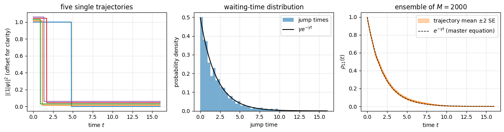
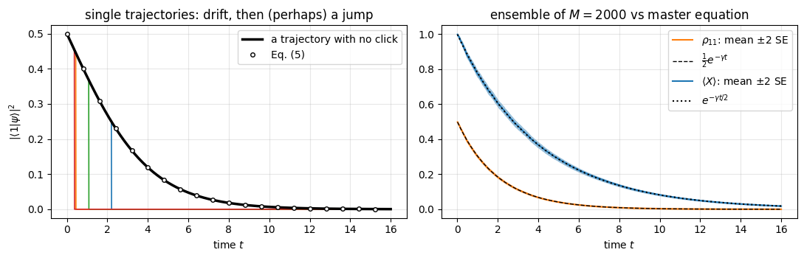
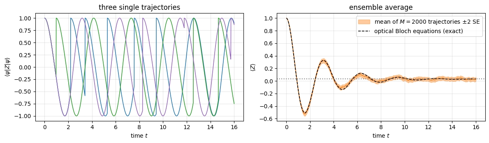
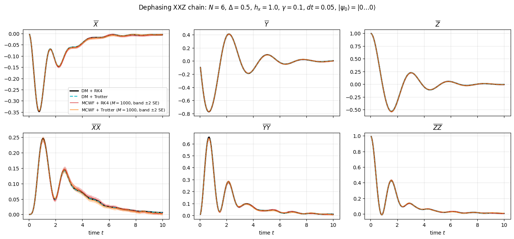
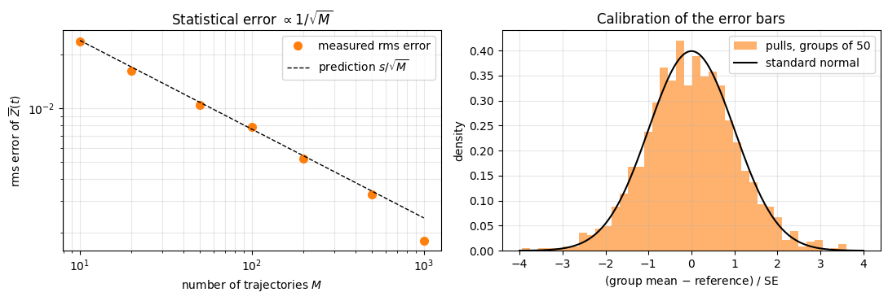
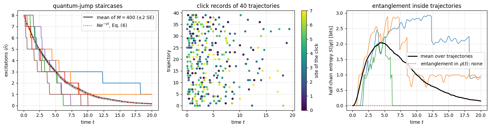
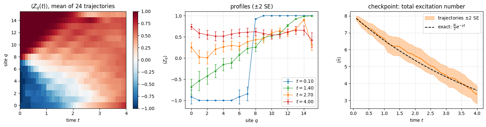

by evolving the density tensor \(\rho\) with its \(4^N\) entries. That works comfortably up to \(N\approx8\) spins and hits a wall at \(N\approx13\), where a single copy of \(\rho\) fills a gigabyte. A state vector of the same 13 spins takes 131 kB. Could we simulate an open system at the price of a closed one?
We can, by changing the question. Eq. (1) describes an ensemble: what we know on average about infinitely many copies of the experiment. But think of one copy — a single trapped ion, say, driven by a laser and watched by a photodetector. Its record is a sequence of clicks at random times. Between clicks the ion has a wave function that evolves smoothly; at a click the wave function changes abruptly — a quantum jump. Such jumps are not a figure of speech: they were observed directly in 1986 as the random switching on and off of the fluorescence of single trapped ions (Nagourney, Sandberg and Dehmelt; Sauter, Neuhauser, Blatt and Toschek; Bergquist, Hulet, Itano and Wineland), and in 2019 a superconducting-qubit experiment caught a jump “mid-flight” (Minev et al.).
The Monte-Carlo wave function (MCWF) method — also called the quantum-jump or quantum-trajectory method, developed around 1992 by Dalibard, Castin and Mølmer, by Dum, Zoller and Ritsch, and by Carmichael — turns this picture into an algorithm:
simulate a pure state\(|\psi(t)\rangle\) that evolves smoothly under a non-Hermitian effective Hamiltonian and, at random times, jumps: \(|\psi\rangle\to L_j|\psi\rangle\);
repeat \(M\) times with different random numbers;
average: \(\overline{|\psi\rangle\langle\psi|}\to\rho(t)\), the solution of Eq. (1), with a statistical error \(\propto1/\sqrt M\).
Memory drops from \(4^N\) to \(2^N\) numbers; the price is the sampling noise, and \(M\) independent runs — which are embarrassingly parallel and therefore a perfect match for jax.vmap.
Road map.
Section 2 derives the method carefully: the effective Hamiltonian, the jump probabilities, the proof that the average over trajectories obeys Eq. (1), and the relation to the Kraus channels of notebook 07 (Chapter 3) and to the Trotter–Kraus step of the previous notebook; it closes with the rule for choosing \(dt\) and with the waiting-time formulation of the algorithm.
Section 3 implements one MCWF step and tests it on a single qubit, where everything is known analytically — including the surprising role of not detecting a photon.
Section 4 builds the many-body machinery, lax.scan over time and jax.vmap over trajectories, for two different steppers.
Section 5 is the central numerical experiment, the \(2\times2\) comparison: {density matrix, trajectories} \(\times\) {RK4, Trotter} for a dephasing XXZ chain.
Section 6 studies the statistical error: error bars, the \(1/\sqrt M\) law, and how to test error bars themselves.
Section 7 looks at single trajectories of a many-body system — staircases of quantum jumps, click records, and entanglement that the ensemble average hides.
Section 8 measures the memory/time trade-off against \(N\) and finishes with an open chain of \(N=16\) spins, where the density tensor would need 69 GB, checked against an exact analytic law.
Section 9 uses trajectories for transport: dephasing turns the ballistic melting of a domain wall into diffusion.
What you will learn
Physics
quantum jumps and continuous measurement: what a single open quantum system does, as opposed to the ensemble;
the effective Hamiltonian \(H_{\rm eff}=H-\tfrac i2\sum_j\gamma_jL_j^\dagger L_j\) and why “no click” is also information;
that many different stochastic processes (“unravellings”) share the same \(\rho(t)\) — and that trajectories can be entangled while \(\rho\) is not.
Numerical methods
the first-order MCWF algorithm and its Kraus form; two steppers (RK4 under \(H_{\rm eff}\) + collective jump decision; unravelled Trotter–Kraus step); the waiting-time algorithm it approximates, and the rule \(\sum_j\delta p_j\lesssim0.1\) for the time step;
systematic (\(dt\)) versus statistical (\(1/\sqrt M\)) error; standard error of the mean, pulls, how to validate error bars; which quantities a trajectory average estimates without bias (linear in \(\rho\)) and which it does not;
cost model \(M\cdot2^N\) versus \(4^N\) and the break-even number of trajectories.
Implementation practice
explicit PRNG keys: one key per trajectory, split per time step, split again per jump operator — reproducible randomness;
lax.scan (time) inside jax.vmap (trajectories) inside jax.jit; random branching without Python if (jax.random.categorical + lax.switch);
timing with compilation separated from execution, batches instead of wasted warm-up runs.
Units and conventions as before: \(\hbar=1\); \(|0\rangle\) is the \(+1\) eigenstate of \(Z\); \(\sigma^\pm=(X\pm iY)/2\), so that \(\sigma^-=|1\rangle\langle0|\) lowers spin up \(|0\rangle\) to spin down \(|1\rangle\) and \(\sigma^+=|0\rangle\langle1|\) (engine: SP) raises it, taking the excited level \(|1\rangle\) to \(|0\rangle\): decay has the jump operator \(\sigma^+\) (quantum-optics texts call it \(\sigma^-\), see notebook 16).
Configuration
Every notebook of this course starts with the same cell. Choose where to run (DEVICE) and the floating-point precision (PRECISION): "double" = float64/complex128 (default, recommended for physics), "single" = float32/complex64 (half the memory, faster on consumer GPUs, but watch the round-off). All code below derives its dtypes from RDTYPE/CDTYPE and its check tolerances from TOL, so nothing else needs to change.
Code
# ==============================================================================# CONFIGURATION -- adapt to your hardware, then run the notebook top to bottom# ==============================================================================DEVICE ="auto"# "auto": use a GPU if JAX finds one, else CPU | "cpu" | "gpu"PRECISION ="double"# "double": float64/complex128 | "single": float32/complex64import osif DEVICE =="cpu": os.environ["JAX_PLATFORMS"] ="cpu"# must be set BEFORE jax is importedimport stringfrom functools import partialimport mathimport numpy as npimport jaximport jax.numpy as jnpfrom jax import lax# Precision is configurable: "double" = float64/complex128 (default; needed for long time evolutions and# tight validation), "single" = float32/complex64 (half the memory, faster on consumer GPUs).# In a notebook PRECISION is defined in the Configuration cell; for this module use the env var QE_PRECISION.PRECISION =globals().get("PRECISION", os.environ.get("QE_PRECISION", "double"))jax.config.update("jax_enable_x64", PRECISION =="double")RDTYPE = jnp.float64 if PRECISION =="double"else jnp.float32 # real dtypeCDTYPE = jnp.complex128 if PRECISION =="double"else jnp.complex64 # complex dtype of all states/operatorsTOL =1e-10if PRECISION =="double"else1e-4# tolerance for sanity checks (asserts)_LETTERS = string.ascii_letters # the 52 einsum index labels a-z, A-Zimport timeimport matplotlib.pyplot as pltif DEVICE =="gpu"and jax.default_backend() =="cpu":print("WARNING: DEVICE='gpu' requested but JAX found no GPU -- running on CPU.")print(f"JAX {jax.__version__} | backend: {jax.default_backend()} | devices: {jax.devices()}")print(f"precision: {PRECISION} -> real {RDTYPE.__name__}, complex {CDTYPE.__name__}, check tolerance TOL={TOL:g}")
JAX 0.11.0 | backend: cpu | devices: [CpuDevice(id=0)]
precision: double -> real float64, complex complex128, check tolerance TOL=1e-10
Engine recap — the simulator primitives used in this notebook (click to expand)
# ==============================================================================# ENGINE RECAP: the functions of quantum_engine.py (SmoQ.jax) used in this notebook.# Each one is derived, with its mathematics and an independent check, in notebook 08b# (Chapter 3), 'Building the quantum simulator engine'.# States are rank-N tensors of shape (2,)*N; every operator acts through ONE einsum.# ==============================================================================# ----------------------------------------------------------------------------# 1. Elementary matrices: Paulis, Clifford generators, rotations# ----------------------------------------------------------------------------X = jnp.array([[0, 1], [1, 0]], dtype=CDTYPE)Y = jnp.array([[0, -1j], [1j, 0]], dtype=CDTYPE)Z = jnp.array([[1, 0], [0, -1]], dtype=CDTYPE)SP = jnp.array([[0, 1], [0, 0]], dtype=CDTYPE) # sigma^+ = |0><1| = (X + iY)/2 : spin raising |1> -> |0>, the decay jump operatorXX = jnp.kron(X, X)YY = jnp.kron(Y, Y)ZZ = jnp.kron(Z, Z)# ----------------------------------------------------------------------------# 2. THE core primitive: a k-qubit operator acting on a tensor through ONE einsum# ----------------------------------------------------------------------------def apply_gate(psi, U, qubits):"""Apply a k-qubit operator U to the axes `qubits` of the tensor `psi`. MATH ---- One qubit (k=1), target q: psi'[s_0,..,a,..,s_{N-1}] = sum_b U[a,b] psi[s_0,..,b,..,s_{N-1}] Two qubits (k=2), targets (q1,q2); the 4x4 matrix is reshaped to U[a1,a2,b1,b2]: psi'[.., a1, .., a2, ..] = sum_{b1,b2} U[a1,a2,b1,b2] psi[.., b1, .., b2, ..] This IS the action of (1 x .. x U x .. x 1) -- written without ever building it. EINSUM TRANSLATION (generated automatically below) ------------------ N=3, q=1 : "db,abc->adc" d = new (output) index of qubit 1 N=4, q=(1,3) : "efbd,abcd->aecf" e,f = new indices of qubits 1 and 3 Recipe: label the axes of psi with letters a,b,c,...; give every target qubit a NEW letter (the next unused ones); U carries (new letters)+(old letters of the targets); the output is psi's labels with the target letters replaced by the new ones. IMPLEMENTATION NOTES -------------------- * reshape of U: (2^k,2^k) -> (2,)*2k. Row index = (a1..ak), column = (b1..bk), and the FIRST qubit in `qubits` is the most significant bit of the small matrix, i.e. it corresponds to the LEFT factor of kron(A,B). * `qubits` may be any distinct axes in any order: non-neighbouring gates cost the same. * U need not be unitary: projectors, Kraus operators and Hamiltonian terms reuse this. * psi may be ANY tensor with those axes of size 2: a state (rank N), a density tensor (rank 2N: ket axes 0..N-1, bra axes N..2N-1), ... COST O(2^k * 2^N) operations, O(2^N) memory (dense matrix: O(4^N) both). JAX `qubits` must be static Python ints (they define the einsum string); psi and U are traced, so the function can sit inside jit / grad / vmap / scan. """ qubits =tuple(int(q) for q in qubits) k, n =len(qubits), psi.ndim U = jnp.asarray(U, dtype=psi.dtype).reshape((2,) * (2* k)) # matrix -> rank-2k tensor inp =list(_LETTERS[:n]) # labels of psi's axes new = _LETTERS[n:n + k] # fresh labels for the outputs out = inp.copy()for a, q inzip(new, qubits): out[q] = a # target axes get the new labels sub =f"{''.join(new)}{''.join(inp[q] for q in qubits)},{''.join(inp)}->{''.join(out)}"return jnp.einsum(sub, U, psi)def apply_gate_dm(rho, U, qubits):"""Unitary on a density tensor: rho -> U rho U^dagger. MATH rho'[a..;a'..] = sum_{b,b'} U[a,b] rho[b..;b'..] U^*[a',b'] i.e. U acts on the KET axis q and the complex conjugate U^* on the BRA axis N+q. (A density matrix is "a state vector of 2N qubits": vectorisation |rho>> and U (x) U^* acting on it.) IMPLEMENTATION two calls of `apply_gate` -- the same einsum machinery, no new code. COST O(2^k 4^N). """ N = rho.ndim //2 rho = apply_gate(rho, U, qubits) # U on ket axesreturn apply_gate(rho, jnp.conj(jnp.asarray(U)), [N + q for q in qubits]) # U^* on bra axesdef apply_kraus_dm(rho, kraus, qubits):"""Quantum channel in Kraus form: rho -> sum_m K_m rho K_m^dagger, sum_m K_m^dag K_m = 1. EINSUM TRANSLATION (N=2, channel on qubit 0; g = Kraus index, summed!) "gea,gfc,abcd->ebfd" with operands K, K^*, rho [a=ket0, b=ket1, c=bra0, d=bra1; e, f = new ket0, bra0] All Kraus branches are summed INSIDE one einsum -- no Python loop over m. `kraus` has shape (M, 2^k, 2^k). """ qubits =tuple(int(q) for q in qubits) k, N =len(qubits), rho.ndim //2 K = jnp.asarray(kraus, dtype=rho.dtype).reshape((-1,) + (2,) * (2* k)) n = rho.ndim inp =list(_LETTERS[:n]) new_k, new_b, m = _LETTERS[n:n + k], _LETTERS[n + k:n +2* k], _LETTERS[n +2* k] out = inp.copy()for a, b, q inzip(new_k, new_b, qubits): out[q], out[N + q] = a, b ket_old ="".join(inp[q] for q in qubits) bra_old ="".join(inp[N + q] for q in qubits) sub =f"{m}{new_k}{ket_old},{m}{new_b}{bra_old},{''.join(inp)}->{''.join(out)}"return jnp.einsum(sub, K, jnp.conj(K), rho)# ----------------------------------------------------------------------------# 3. State preparation# ----------------------------------------------------------------------------def zero_state(N):"""|00...0>: a rank-N tensor of zeros with a single 1 at index (0,0,...,0). JAX arrays are immutable: `.at[idx].set(v)` returns an updated COPY (functional style)."""return jnp.zeros((2,) * N, dtype=CDTYPE).at[(0,) * N].set(1.0)_KETS = {"0": [1, 0], "1": [0, 1], "+": [1, 1], "-": [1, -1], "r": [1, 1j], "l": [1, -1j]}def product_state(spec):"""Product state from a string, one character per qubit: product_state('01+-') = |0>|1>|+>|->. ('r','l' = the +1/-1 eigenstates of Y.) MATH psi[s_0,...,s_{N-1}] = v0[s_0] v1[s_1] ... v_{N-1}[s_{N-1}] EINSUM an outer product = einsum with NO summed index: "a,b,c->abc". A product state needs only 2N numbers; entanglement is what makes all 2^N necessary. """ vecs = [jnp.array(_KETS[c], dtype=CDTYPE) / jnp.linalg.norm(jnp.array(_KETS[c], dtype=CDTYPE))for c in spec] n =len(vecs) sub =",".join(_LETTERS[i] for i inrange(n)) +"->"+ _LETTERS[:n]return jnp.einsum(sub, *vecs)def basis_state(bits):"""Computational basis state |b_0 b_1 ... b_{N-1}> from a list of bits.""" bits =tuple(int(b) for b in bits)return jnp.zeros((2,) *len(bits), dtype=CDTYPE).at[bits].set(1.0)def to_dm(psi):"""Pure state -> density TENSOR rho[s..; s'..] = psi[s..] psi^*[s'..] (rank 2N). An outer product: einsum "ab,AB->abAB" -- here via the equivalent tensordot(axes=0)."""return jnp.tensordot(psi, jnp.conj(psi), axes=0)# ----------------------------------------------------------------------------# 4. Reduced density matrices & observables (matrix-free)# ----------------------------------------------------------------------------def rdm(psi, keep):"""Reduced density matrix of the qubits `keep` from a PURE state: rho_A = Tr_B |psi><psi|. MATH rho_A[a, a'] = sum_{b} psi[a, b] psi^*[a', b] (a: indices of A, b: of the rest B) EINSUM TRANSLATION N=3, keep=(0,): "abc,Abc->aA" with operands psi, psi^* * letters of B (b,c) appear in BOTH operands and not in the output -> summed = traced out * the kept axis gets a different letter in the second operand -> stays open (a and A) The full |psi><psi| (4^N numbers) is never formed; cost O(2^N 2^|A|). Returns a (2^|A|, 2^|A|) matrix with row/column order following `keep`. """ keep =tuple(int(q) for q in keep) n, k = psi.ndim, len(keep) a =list(_LETTERS[:n]) b = a.copy()for new, q inzip(_LETTERS[n:n + k], keep): b[q] = new sub =f"{''.join(a)},{''.join(b)}->{''.join(a[q] for q in keep)}{''.join(b[q] for q in keep)}"return jnp.einsum(sub, psi, jnp.conj(psi)).reshape(2** k, 2** k)def rdm_dm(rho, keep):"""Partial trace of a density TENSOR (rank 2N), keeping the qubits `keep`. MATH rho_A[a,a'] = sum_b rho[a,b ; a',b] EINSUM N=2, keep=(0,): "abAb->aA" -- the letter b is REPEATED inside one operand and absent from the output: that is a trace over that pair of axes. """ keep =tuple(int(q) for q in keep) N = rho.ndim //2 ket =list(_LETTERS[:N]) bra = [(_LETTERS[N + q] if q in keep else ket[q]) for q inrange(N)] sub =f"{''.join(ket)}{''.join(bra)}->{''.join(ket[q] for q in keep)}{''.join(bra[q] for q in keep)}"return jnp.einsum(sub, rho).reshape(2**len(keep), 2**len(keep))# ----------------------------------------------------------------------------# 5. State characteristics: entropies, fidelity, negativity# ----------------------------------------------------------------------------def schmidt_values(psi, subsystem):"""Schmidt coefficients of the bipartition A|B with A = `subsystem`. MATH Group the tensor axes into a matrix M[(a),(b)] = psi[a,b] of shape (2^|A|, 2^|B|). Its SVD M = U diag(lambda) V^dag IS the Schmidt decomposition |psi> = sum_k lambda_k |u_k>_A |v_k>_B , rho_A has eigenvalues lambda_k^2. IMPLEMENTATION transpose (A axes first) -> reshape -> svd. No density matrix needed. """ A =tuple(int(q) for q in subsystem) B =tuple(q for q inrange(psi.ndim) if q notin A) M = jnp.transpose(psi, A + B).reshape(2**len(A), -1)return jnp.linalg.svd(M, compute_uv=False)def entanglement_entropy(psi, subsystem, base=2.0):"""Entanglement entropy S_A = -sum_k p_k log p_k with p_k = lambda_k^2 (squared Schmidt values). Product state: 0. Bell/GHZ across any cut: 1 bit. Random state: ~ |A| - 1/(2 ln2) 2^{|A|-|B|} (Page).""" p = jnp.clip(schmidt_values(psi, subsystem) **2, 1e-16, None)return-jnp.sum(p * jnp.log(p)) / jnp.log(base)def _sqrtm_psd(A):"""Square root of a positive semi-definite matrix via eigendecomposition: V sqrt(w) V^dag.""" w, v = jnp.linalg.eigh(A)return (v * jnp.sqrt(jnp.clip(w, 0, None))) @ v.conj().T# ----------------------------------------------------------------------------# 7. Noise channels (Kraus operators): density matrix and quantum-trajectory forms# ----------------------------------------------------------------------------def kraus_from_jump(L, gamma_dt):"""Kraus pair generated by a Lindblad jump operator L acting for a short time dt (rate gamma): K1 = sqrt(gamma dt) L 'a jump happened' K0 = sqrt(1 - gamma dt L^dag L) 'no jump' (~ exp(-gamma dt L^dag L / 2)) Completeness K0^dag K0 + K1^dag K1 = 1 holds EXACTLY whenever gamma dt ||L^dag L|| <= 1, so that 1 - gamma dt L^dag L is positive semidefinite and its square root exists; the map is then trace preserving. For larger steps the negative eigenvalues are clipped by _sqrtm_psd and completeness FAILS (decay L = |0><1| = SP, gamma dt = 1.5: error 0.5). It reproduces the Lindblad dissipator up to O(dt^2).""" L = jnp.asarray(L, dtype=CDTYPE) K0 = _sqrtm_psd(jnp.eye(L.shape[0], dtype=CDTYPE) - gamma_dt * (L.conj().T @ L))return jnp.stack([K0, jnp.sqrt(gamma_dt) * L])def apply_kraus_mcwf(key, psi, kraus, qubits):"""Apply a channel to a PURE state stochastically (quantum trajectory / Monte-Carlo wave function). MATH choose branch m with probability p_m = ||K_m psi||^2 = Tr(K_m rho_A K_m^dag) then |psi> -> K_m|psi> / sqrt(p_m). Averaging |psi><psi| over many trajectories gives exactly sum_m K_m rho K_m^dag. WHY memory O(2^N) instead of O(4^N): open systems at the price of closed ones (times #trajectories, which are embarrassingly parallel -> jax.vmap over keys). IMPLEMENTATION probabilities come from the SMALL reduced density matrix (einsum "mab,bc,mac->m"); `K[m]` with a traced integer m is a gather, so everything stays jit-compatible. """ K = jnp.asarray(kraus, dtype=CDTYPE) r = rdm(psi, qubits) probs = jnp.real(jnp.einsum("mab,bc,mac->m", K, r, jnp.conj(K))) m = jax.random.categorical(key, jnp.log(jnp.clip(probs, 1e-300, None))) psi = apply_gate(psi, K[m], qubits)return psi / jnp.linalg.norm(psi)# ----------------------------------------------------------------------------# 8. Hamiltonians as lists of local terms; H|psi> matrix-free# ----------------------------------------------------------------------------def heisenberg_terms(N, Jxx=1.0, Jyy=1.0, Jzz=1.0, hx=0.0, hy=0.0, hz=0.0, periodic=False, bonds=None):"""Spin-1/2 Hamiltonian in Pauli convention H = sum_<ij> (Jxx X_i X_j + Jyy Y_i Y_j + Jzz Z_i Z_j) + sum_i (hx X_i + hy Y_i + hz Z_i) returned as a LIST of local terms [(qubits, small_matrix), ...] -- this list *is* our Hamiltonian. Heisenberg: Jxx=Jyy=Jzz XXZ: Jxx=Jyy!=Jzz XY: Jzz=0 TFIM: only Jzz and hx. `bonds` overrides the default open chain (any graph: ladders, 2D lattices, all-to-all, ...)."""if bonds isNone: bonds = [(i, i +1) for i inrange(N -1)] + ([(N -1, 0)] if periodic and N >2else []) terms = [((i, j), Jxx * XX + Jyy * YY + Jzz * ZZ) for (i, j) in bonds]if hx !=0or hy !=0or hz !=0: terms += [((i,), hx * X + hy * Y + hz * Z) for i inrange(N)]return terms# ----------------------------------------------------------------------------# 9. Time evolution: TEBD / Trotter-Suzuki, Chebyshev, Krylov, exact# ----------------------------------------------------------------------------def _expm_herm(h, tau):"""exp(-i tau h) for a SMALL Hermitian matrix: h = V w V^dag => V exp(-i tau w) V^dag.""" w, v = jnp.linalg.eigh(jnp.asarray(h, dtype=CDTYPE))return (v * jnp.exp(-1j* tau * w)) @ v.conj().Tdef tebd_gates(terms, dt, order=2):"""Gate sequence of ONE Trotter-Suzuki (TEBD) step for H = sum_k h_k. MATH exp(-i H dt) cannot be split exactly because [h_k, h_l] != 0, but (BCH formula): order 1: prod_k e^{-i h_k dt} local error O(dt^2), global O(dt) order 2: prod_k e^{-i h_k dt/2} * prod_k(reversed) e^{-i h_k dt/2} local O(dt^3), global O(dt^2) order 4: S2(s dt)^2 S2((1-4s) dt) S2(s dt)^2, s = 1/(4 - 4^{1/3}) (Suzuki) global O(dt^4) Each factor is a 2x2 or 4x4 unitary -> applied by einsum; this is TEBD on a full state vector. Every order is exactly unitary: the norm is conserved to machine precision; the ERROR is in the phase /direction of the state, and it is controlled by dt. """if order ==1:return [(q, _expm_herm(h, dt)) for q, h in terms]if order ==2: half = [(q, _expm_herm(h, dt /2)) for q, h in terms]return half + half[::-1]if order ==4: s =1.0/ (4.0-4.0** (1.0/3.0)) seq = []for w in (s, s, 1-4* s, s, s): seq += tebd_gates(terms, w * dt, order=2)return seqraiseValueError("order must be 1, 2 or 4")def apply_gates(psi, gates):"""Apply a list [(qubits, U), ...] in order -- a quantum circuit is a Python loop over einsums. Under `jax.jit` the loop is unrolled at trace time and XLA fuses it into one program."""for qubits, U in gates: psi = apply_gate(psi, U, qubits)return psidef apply_gates_dm(rho, gates):"""Same circuit on a density tensor (U on kets, U^* on bras)."""for qubits, U in gates: rho = apply_gate_dm(rho, U, qubits)return rho# ----------------------------------------------------------------------------# 10. Open systems: Lindblad master equation (density tensor) and quantum trajectories (MCWF)# ----------------------------------------------------------------------------def lindblad_rhs(rho, terms, jumps):"""Right-hand side of the Lindblad (GKSL) master equation, matrix-free: d rho/dt = -i[H, rho] + sum_j gamma_j ( L_j rho L_j^dag - (1/2){L_j^dag L_j, rho} ). `jumps` = [(qubits, L, gamma), ...]. KEY TRICK left multiplication O rho acts on KET axes with O; right multiplication rho O acts on BRA axes with O^T [ (rho O)_{ab} = sum_c rho_{ac} O_{cb} ]. So every term is again `apply_gate` on a rank-2N tensor. """ N = rho.ndim //2 out = jnp.zeros_like(rho)for q, h in terms: bq = [N + x for x in q] out = out -1j* (apply_gate(rho, h, q) - apply_gate(rho, jnp.asarray(h).T, bq))for q, L, g in jumps: L = jnp.asarray(L, dtype=CDTYPE) bq = [N + x for x in q] LdL = L.conj().T @ L out = out + g * (apply_gate(apply_gate(rho, L, q), jnp.conj(L), bq)-0.5* apply_gate(rho, LdL, q) -0.5* apply_gate(rho, LdL.T, bq))return outdef lindblad_rk4_step(rho, terms, jumps, dt):"""Classical 4th-order Runge-Kutta step for d rho/dt = L(rho): local error O(dt^5). TRACE conserved to round-off: every term of the Lindblad generator is traceless and the step is a linear combination of generator evaluations. This holds even beyond the stability limit, so a correct trace does NOT certify a healthy run. POSITIVITY not guaranteed: small negative eigenvalues appear for moderate dt, and the run blows up once dt * ||L|| exceeds the RK4 stability bound.""" f =lambda r: lindblad_rhs(r, terms, jumps) k1 = f(rho) k2 = f(rho +0.5* dt * k1) k3 = f(rho +0.5* dt * k2) k4 = f(rho + dt * k3)return rho + dt /6* (k1 +2* k2 +2* k3 + k4)def lindblad_trotter_step_dm(rho, gates, jump_kraus):"""Trotterised Lindblad step on a density tensor: unitary TEBD gates, then one Kraus channel per jump operator (`jump_kraus` = [(qubits, kraus_from_jump(L, gamma*dt)), ...]). Completely positive and trace preserving by construction, first order in the dissipator.""" rho = apply_gates_dm(rho, gates)for q, K in jump_kraus: rho = apply_kraus_dm(rho, K, q)return rhodef lindblad_trotter_step_mcwf(key, psi, gates, jump_kraus):"""The SAME step unravelled on a pure state (Monte-Carlo wave function): each Kraus channel is sampled with `apply_kraus_mcwf`. The trajectory average equals `lindblad_trotter_step_dm` exactly, so DM-vs-MCWF comparisons test only the statistical error ~ 1/sqrt(n_traj). JAX: scan over time steps, vmap over trajectory keys.""" psi = apply_gates(psi, gates) keys = jax.random.split(key, max(len(jump_kraus), 1))for k, (q, K) inzip(keys, jump_kraus): psi = apply_kraus_mcwf(k, psi, K, q)return psi
2. Theory: unravelling the master equation
2.1 The master equation in “effective Hamiltonian” form
Collect in Eq. (1) everything that multiplies \(\rho\) from the left, and everything that multiplies it from the right:
(check: \(-iH_{\rm eff}\rho = -iH\rho-\tfrac12\sum_j\gamma_jL_j^\dagger L_j\rho\), and \(+i\rho H_{\rm eff}^\dagger = +i\rho H-\tfrac12\sum_j\gamma_j\rho L_j^\dagger L_j\).) The first term looks like a Schrödinger equation with a non-Hermitian Hamiltonian; the second, the “jump term”, is the only one that cannot be written as an operation on a ket alone. The MCWF method treats the first deterministically and the second stochastically.
2.2 The stochastic process
Let \(|\psi(t)\rangle\) be normalised and \(dt\) small. One step of the (first-order) algorithm:
(a) Jump probabilities. For every jump operator compute
Physically, \(j\) labels a detector channel (a photon from atom \(j\), a phase kick on spin \(j\), …). The rule says: clicks in channel \(j\) arrive with rate \(\gamma_j\langle L_j^\dagger L_j\rangle\), and a click updates the state by \(L_j\).
2.3 Proof: the average over trajectories obeys the Lindblad equation
Let \(\sigma(t)=|\psi(t)\rangle\langle\psi(t)|\) and average \(\sigma(t+dt)\) over the random outcome of one step, weighting the branches (b) and (c) with their probabilities:
The bracket is the right-hand side of Eq. (2), \(\mathcal L(\sigma)\). Finally average over the state at time \(t\) as well (over all earlier random choices): since the bracket is linear, \(\overline{\mathcal L(\sigma)} = \mathcal L(\overline\sigma)\), and with \(\rho(t):=\overline{\sigma(t)}\)
Every single trajectory is a nonlinear stochastic process (renormalisation, state-dependent probabilities), yet the ensemble average is the linear master equation. For any observable, \(\mathrm{Tr}(\rho\,O) = \overline{\langle\psi|O|\psi\rangle}\): we average ordinary pure-state expectation values.
Then \(\delta p_j = \|K_j\psi\|^2\), \(1-\delta p = \|K_0\psi\|^2\), the step reads “choose branch \(m\) with probability \(\|K_m\psi\|^2\), replace \(|\psi\rangle\to K_m|\psi\rangle/\|K_m\psi\|\)”, and its average is the channel \(\rho\mapsto\sum_mK_m\rho K_m^\dagger\). Both statements hold only to \(O(dt^2)\): \(\sum_mK_m^\dagger K_m = \mathbb 1+dt^2H_{\rm eff}^\dagger H_{\rm eff}\), so the branch probabilities do not add up to exactly one and the channel is not exactly trace preserving. (kraus_from_jump repairs this, see below.) This is exactly the stochastic unravelling of a Kraus channel from notebook 07 (Chapter 3), Section 11 (engine: apply_kraus_mcwf), applied to the short-time channel from which we derived the Lindblad equation in the previous notebook, Section 2.3. Nothing new had to be invented.
This observation gives us a second algorithm for free. The Trotter–Kraus step of the previous notebook factorises the short-time channel into a product of simple CPTP maps,
with TEBD gates for \(U\approx e^{-iHdt}\) and kraus_from_jump: \(K_1^{(j)}=\sqrt{\gamma_jdt}L_j\), \(K_0^{(j)}=\sqrt{\mathbb 1-\gamma_jdt\,L_j^\dagger L_j}\). Expanding the product, \(\mathcal E_J\circ\dots\circ\mathcal U = \mathbb 1+dt\,\mathcal L+O(dt^2)\): the same master equation to first order. Unravel each factor on a pure state — apply the gates, then sample every two-outcome channel in turn — and you obtain the engine’s lindblad_trotter_step_mcwf. Its trajectory average equals lindblad_trotter_step_dmexactly, for any \(dt\), which makes this pair a clean test of the statistics alone.
stepper A: “MCWF + RK4” (Section 3)
stepper B: “MCWF + Trotter” (engine)
coherent + no-jump part
RK4 integration of \(\partial_t\lvert\psi\rangle=-iH_{\rm eff}\lvert\psi\rangle\)
TEBD gates, then \(K_0^{(j)}\) per site
jump decision
one collective decision per step (at most one jump)
one independent two-outcome decision per jump operator
average map
Eq. (1) up to \(O(dt)\)
lindblad_trotter_step_dm exactly; Eq. (1) up to \(O(dt)\)
returns which jump happened
yes
no
2.5 The meaning of a single trajectory
Continuous measurement. If every quantum emitted into the environment is detected, the record of clicks is one realisation of the process of Section 2.2 and \(|\psi(t)\rangle\) is the experimenter’s best knowledge conditioned on that record. Branch (b) is then a genuine measurement result too: “no click during \(dt\)”. It changes the state (Section 3.3).
The trajectory is tied to one measurement scheme. The process of Section 2.2 is the record of an ideal photon counter: a click means “one quantum went into the environment through channel \(j\)”, and the state collapses by \(L_j\). Read that way, \(\gamma_j\langle L_j^\dagger L_j\rangle\) is a photon count rate and the jumps are detector events, not a numerical device.
Not unique. Measuring the environment differently gives a different stochastic process with the same average. Formally, Kraus operators are defined only up to a unitary mixing, \(K_m\to\sum_nu_{mn}K_n\), and every choice of \(u\) is a legitimate measurement of the environment. Mixing the no-jump operator \(K_0\) into the jump operators with a large amplitude (physically: interfering the emitted light with a strong local oscillator before the detector — homodyne detection) turns the rare large jumps into a continuous small-noise diffusion — a diffusive unravelling, of which the quantum-state-diffusion equation of Gisin and Percival is the best-known example. Anything linear in \(|\psi\rangle\langle\psi|\) (expectation values, and fidelities with a fixed pure state) is unravelling-independent, because it is a property of \(\rho\) alone; nonlinear functionals of the state averaged over trajectories (the entanglement entropy of \(|\psi\rangle\), the purity of a subsystem) are not properties of \(\rho\) and change when the detection scheme changes. We shall see an example in Section 7.
2.6 Statistical error
With \(M\) independent trajectories the estimator of \(\langle O\rangle(t)=\mathrm{Tr}(\rho(t)O)\) and its standard error are
By the central limit theorem \(\bar O\) is Gaussian around the mean of the estimator with standard deviation \(\mathrm{SE}\): that mean lies within \(\pm1\,\mathrm{SE}\) in 68 % and within \(\pm2\,\mathrm{SE}\) in 95 % of cases. Halving the error costs four times more trajectories.
Two caveats that decide how the method is used in practice.
(i) Which quantities are estimated without bias.\(\bar O\) is unbiased for the finite-\(dt\) value of any quantity linear in \(\rho\): expectation values \(\mathrm{Tr}(\rho O)\), and fidelities \(\langle\chi|\rho|\chi\rangle\) with a fixed pure target. (The remaining offset from the exact Lindblad solution is the systematic \(dt\) error of Section 2.7, not a statistical one.) Quantities that are nonlinear in \(\rho\) — purity \(\mathrm{Tr}\rho^2\), von Neumann or entanglement entropy of \(\rho\), variances \(\langle O^2\rangle-\langle O\rangle^2\) assembled from estimated means, fidelity with a mixed target — cannot be obtained by inserting \(\bar O\) into the formula: the plug-in estimator carries a bias of order \(1/M\) on top of its statistical error. Worse, averaging the nonlinear quantity over trajectories does not help either, because \(\overline{f(|\psi_i\rangle\langle\psi_i|)}\ne f(\rho)\) for nonlinear \(f\); that average is a property of the unravelling (Section 2.5), which is exactly the point of Section 7. Everything this notebook averages over trajectories is linear, except the entanglement entropy of Section 7, which is discussed there as a quantity in its own right.
(ii) How \(s\) scales with \(N\). For a bounded observable, \(|o_i|\le1\) gives \(s\le1\)independently of \(N\) — this holds for single Pauli operators and for the site-averaged quantities used below, so the number of trajectories needed for a fixed absolute accuracy of an intensive observable does not grow with the Hilbert-space dimension. It does not hold for extensive observables. The total excitation number \(\hat n=\sum_i|1\rangle\langle1|_i\) of Sections 7 and 8.3 ranges over \(0\ldots N\), and for weakly correlated sites its trajectory-to-trajectory standard deviation grows as \(s\sim\sqrt{N}\) (a sum of \(N\) nearly independent contributions). Fixed absolute accuracy on \(\hat n\) therefore costs \(M\propto N\) trajectories; fixed relative accuracy is cheaper still: \(\langle\hat n\rangle\) itself grows like \(N\), so the relative error is of order \(1/\sqrt{NM}\) and the required \(M\) falls like \(1/N\).
2.7 Step size and the waiting-time algorithm
The scheme of Section 2.2 makes one Bernoulli decision per step and allows at most one jump per step. Both approximations are controlled by the same small parameter, the expected number of clicks in one step:
\[ \delta p = dt\sum_j\gamma_j\langle L_j^\dagger L_j\rangle . \]
Two jumps inside one step are missed with probability \(\tfrac12(\delta p)^2\) per step, i.e. \(\tfrac12\delta p\cdot(\delta p/dt)\) per unit time, and the jump is applied at the end of the step rather than at a uniformly distributed instant inside it, an error of order \(dt\) in the jump time. Both are \(O(dt)\) errors in the trajectory average, with a prefactor set by the total rate \(\Gamma=\sum_j\gamma_j\langle L_j^\dagger L_j\rangle\): the relative bias of a quantity decaying at rate \(\Gamma\) accumulates as \(\sim\tfrac12\Gamma^2\,dt\,t\). (The Trotter–Kraus stepper of Section 2.4 has a bias of exactly this form: it multiplies an excited population by \(1-\gamma dt\) per step instead of \(e^{-\gamma dt}\), so the population decays as \((1-\gamma dt)^{t/dt}=e^{-\gamma t}\,e^{-\gamma^2dt\,t/2}\). Section 8.3 measures it.)
Numerical practice. Choose \(dt\) so that \(\delta p=dt\sum_j\gamma_j\langle L_j^\dagger L_j\rangle\lesssim0.1\), and separately so that the coherent step is accurate (\(dt\,\lVert H\rVert\ll1\)). The first condition is extensive: with one jump operator per site the sum has \(N\) terms, so at fixed \(\gamma\) the admissible \(dt\) shrinks like \(1/N\). The engine’s Trotter stepper escapes this restriction — it takes an independent two-outcome decision per jump operator, so several sites may click in the same step; its only hard constraint is \(\gamma_jdt\le1\), so that \(K_0=\sqrt{\mathbb 1-\gamma_jdt\,L_j^\dagger L_j}\) exists. That is why Section 8.3 can run \(N=16\) sites at \(\delta p\approx0.16\) with the Trotter stepper, a value that would be too large for stepper A.
The waiting-time (delay-function) algorithm. The scheme of Section 2.2 is the one of Dalibard, Castin and Mølmer; the scheme of Dum, Zoller and Ritsch, who draw each decay time from the photon-count distribution of the driven atom, avoids the per-step Bernoulli draw altogether. Draw a single uniform random number \(r\in(0,1)\), propagate the unnormalised state under \(H_{\rm eff}\) without renormalising, and wait until its squared norm has fallen to \(r\):
\[ \langle\tilde\psi(t_{\rm jump})|\tilde\psi(t_{\rm jump})\rangle = r . \]
Because the squared norm is the no-jump probability (Eq. (3)), \(t_{\rm jump}\) drawn this way has exactly the right distribution — for any step size, since the norm is obtained from a deterministic integration that can be made as accurate as one likes. At \(t_{\rm jump}\) pick the channel with probability \(\propto\gamma_j\|L_j\tilde\psi\|^2\), apply \(L_j\), renormalise, draw a new \(r\) and continue. The scheme of Section 2.2 is the first-order, fixed-grid approximation to this: it replaces the exact waiting time by one Bernoulli trial per step. The waiting-time version costs a root search inside the time loop (and, on a fixed grid, an interpolation of the crossing — without it the jump time is again quantised in units of \(dt\) and the \(O(dt)\) bias returns), which is awkward under lax.scan. This notebook therefore uses the fixed-grid schemes and keeps \(dt\) small; Exercise 7 builds the waiting-time version.
3. One MCWF step for a single qubit
3.1 From formula to code
We implement stepper A for an arbitrary number of spins, matrix-free, with the conventions of the engine: terms = [(qubits, h), ...] for \(H\) and jumps = [(qubits, L, gamma), ...] for the dissipation.
apply_neg_i_heff — the right-hand side \(-iH_{\rm eff}|\psi\rangle = -i\sum_kh_k|\psi\rangle-\tfrac12\sum_j\gamma_jL_j^\dagger L_j|\psi\rangle\). Every term is a small matrix acting on one or two tensor axes: apply_gate (which does not require unitarity).
No-jump propagation. The Euler step \((\mathbb 1-iH_{\rm eff}dt)\) of Section 2.2 is fine for a proof but poor numerics: we saw in the previous notebook that Euler is unstable for oscillatory dynamics. We integrate \(\partial_t|\psi\rangle=-iH_{\rm eff}|\psi\rangle\) over \(dt\) with one RK4 step instead; the norm then decays like \(e^{-\delta p}\) to high accuracy.
Jump decision from the norm. Following Eq. (3) we take the no-jump probability from the propagated state itself, \(p_0=\langle\tilde\psi|\tilde\psi\rangle\), and distribute the remaining \(1-p_0\) over the channels in proportion to the rates \(w_j=\gamma_j\|L_j\tilde\psi\|^2\). If a jump occurs it is applied to the propagated state. Compared with Section 2.2 all changes are of relative order \(dt\) within a branch of probability \(O(dt)\), so the proof goes through unchanged, but the error constant is smaller (a jump step no longer “loses” its coherent evolution).
\(\|L_j\tilde\psi\|^2\) without applying \(L_j\).\(\langle\tilde\psi|L_j^\dagger L_j|\tilde\psi\rangle=\mathrm{Tr}(\tilde\rho_q\,L_j^\dagger L_j)\) with the (unnormalised) single-site reduced density matrix from rdm. For \(N\) single-site channels that is \(N\) cheap contractions.
Branching without if. The outcome \(m\in\{0,1,\dots,J\}\) is a traced random integer, so a Python if cannot be used under jit. jax.random.categorical(key, log p) draws \(m\); lax.switch(m, branches, state) applies the chosen branch (\(m=0\): nothing, \(m=j\): \(L_j\)). Under vmap, switch evaluates all branches and selects — \(J\) cheap single-site operations.
JAX practice. Random numbers in JAX are explicit: a function that needs randomness takes a key argument and the same key always gives the same numbers. Keys are never reused: jax.random.split(key, n) produces n independent children. Our hierarchy: one key per trajectory → split into one key per time step → (engine stepper) split again per jump operator.
Code
# ==============================================================================# STEP 1: stepper A -- RK4 under H_eff + one collective jump decision# ==============================================================================def apply_neg_i_heff(psi, terms, jumps):"""Right-hand side of the no-jump evolution: -i H_eff |psi>, matrix-free. MATH H_eff = H - (i/2) sum_j gamma_j L_j^dag L_j (non-Hermitian: the norm of psi decays) -i H_eff psi = -i sum_k h_k psi - (1/2) sum_j gamma_j (L_j^dag L_j) psi COST O((#terms + #jumps) 2^N), memory O(2^N). """ out = jnp.zeros_like(psi)for q, h in terms: out = out -1j* apply_gate(psi, h, q)for q, L, g in jumps: L = jnp.asarray(L, dtype=CDTYPE) out = out -0.5* g * apply_gate(psi, L.conj().T @ L, q)return outdef nojump_rk4_step(psi, terms, jumps, dt):"""One RK4 step of d|psi>/dt = -i H_eff |psi>. The state is NOT renormalised: <psi~|psi~> = exp(-dt sum_j gamma_j <L_j^dag L_j>) + O(dt^2) is the no-jump probability, Eq. (3).""" f =lambda p: apply_neg_i_heff(p, terms, jumps) k1 = f(psi) k2 = f(psi +0.5* dt * k1) k3 = f(psi +0.5* dt * k2) k4 = f(psi + dt * k3)return psi + dt /6* (k1 +2* k2 +2* k3 + k4)def mcwf_rk4_step(key, psi, terms, jumps, dt):"""One Monte-Carlo wave-function step (first order in the jump statistics). Returns (psi_new, m). MATH psi~ = no-jump propagation under H_eff ; p_0 = <psi~|psi~> (no jump) p_j = (1 - p_0) w_j / sum_j w_j , w_j = gamma_j ||L_j psi~||^2 (jump in channel j) m = 0: psi -> psi~ / ||psi~|| m = j >= 1: psi -> L_j psi~ / ||L_j psi~|| IMPLEMENTATION w_j from the single-site reduced density matrix (einsum inside `rdm`); the random branch is drawn with `categorical` and applied with `lax.switch` (no Python if). JAX `key` is consumed exactly once. m is returned so that the click record can be stored. """ phi = nojump_rk4_step(psi, terms, jumps, dt) p0 = jnp.real(jnp.vdot(phi, phi)) w = jnp.stack([g * jnp.real(jnp.trace(rdm(phi, q) @ (jnp.asarray(L, dtype=CDTYPE).conj().T @ jnp.asarray(L, dtype=CDTYPE))))for q, L, g in jumps]) probs = jnp.concatenate([p0[None], (1.0- p0) * w / jnp.clip(jnp.sum(w), 1e-300, None)]) m = jax.random.categorical(key, jnp.log(jnp.clip(probs, 1e-300, None))) branches = [lambda p: p] + [(lambda p, q=q, L=L: apply_gate(p, L, q)) for q, L, _ in jumps] phi = lax.switch(m, branches, phi)return phi / jnp.linalg.norm(phi), mdef run_trajectory(step, psi0, key, n_steps, observe):"""One trajectory: iterate (key_t, psi) -> step -> (psi, m) for n_steps; record observe(psi) and m. JAX lax.scan over an ARRAY OF KEYS (one per time step): the carry is the state, the scanned input the key. Returns (observables[n_steps, ...], jumps[n_steps]). """def body(psi, k): psi, m = step(k, psi)return psi, (observe(psi), m)return lax.scan(body, psi0, jax.random.split(key, n_steps))[1]
run_trajectory handles one trajectory. Many trajectories are obtained without touching it: jax.vmap(lambda key: run_trajectory(..., key, ...))(keys) maps the function over an array of keys, and jax.jit compiles the batched program. This is the standard JAX layering — write the code for a single sample, let vmap batch it (JAX from scratch).
3.2 The single-qubit laboratory
One driven, decaying qubit: \(H=\tfrac\Omega2X\), \(L=\sigma^+\) with rate \(\gamma\), hence \(H_{\rm eff}=\tfrac\Omega2X-\tfrac{i\gamma}2|1\rangle\langle1|\). The function below runs \(M\) trajectories from an arbitrary initial state; psi0 and Omega are traced arguments, so the three experiments of this section share one compiled program. Recorded per step: \(\langle X\rangle\), \(\langle Y\rangle\), \(\langle Z\rangle\) of the pure state and the jump flag \(m\).
Code
# ==============================================================================# PARAMETERS (single-qubit laboratory)# ==============================================================================gamma_q =0.5# decay ratedt_q =0.01# time step: gamma*dt = 0.005 << 1T_q =16.0# total time: gamma*T = 8M_q =2000# trajectoriesn_q =int(round(T_q / dt_q))t_q = dt_q * np.arange(1, n_q +1)def bloch_pure(psi):"""(<X>, <Y>, <Z>) of a single-qubit PURE state psi = (a, b): <X> = 2 Re(a* b), <Y> = 2 Im(a* b), <Z> = |a|^2 - |b|^2.""" a, b = psi[0], psi[1] c = jnp.conj(a) * breturn jnp.stack([2* jnp.real(c), 2* jnp.imag(c), jnp.abs(a) **2- jnp.abs(b) **2])@jax.jitdef qubit_trajectories(psi0, Omega, keys):"""M = len(keys) trajectories of the driven decaying qubit. Returns (bloch[M, n_q, 3], jumps[M, n_q]).""" terms = [((0,), 0.5* Omega * X)] jumps = [((0,), SP, gamma_q)] step =lambda k, p: mcwf_rk4_step(k, p, terms, jumps, dt_q)return jax.vmap(lambda k: run_trajectory(step, psi0, k, n_q, bloch_pure))(keys)def mean_and_se(samples):"""Trajectory average and its standard error, Eq. (4); axis 0 = trajectories.""" samples = np.asarray(samples)return samples.mean(0), samples.std(0, ddof=1) / np.sqrt(samples.shape[0])key_root = jax.random.PRNGKey(2025) # ONE root key for the whole notebook ...key_A, key_B, key_C, key_val, key_22, key_stair, key_big = jax.random.split(key_root, 7) # ... split once per experiment
3.3 Experiment A: spontaneous emission — a jump at a random time
Start in the excited state \(|1\rangle\), no drive. The no-jump evolution multiplies the only non-zero amplitude by \(e^{-\gamma dt/2}\) and the renormalisation undoes it: the state stays exactly \(|1\rangle\) until a jump takes it to \(|0\rangle\), once and for all. A single trajectory is a step function; all the physics is in the random jump time, which should be exponentially distributed with rate \(\gamma\), and the ensemble average must reproduce \(\rho_{11}(t)=e^{-\gamma t}\) (previous notebook, Section 3.1).
Code
# ==============================================================================# EXPERIMENT A: decay from |1>, no drive# ==============================================================================psi_excited = jnp.array([0, 1], dtype=CDTYPE)bloch_A, jumps_A = qubit_trajectories(psi_excited, 0.0, jax.random.split(key_A, M_q))p1_A =0.5* (1- np.asarray(bloch_A[:, :, 2])) # rho_11 = (1 - <Z>)/2 for each trajectory and timejumped = np.asarray(jumps_A).max(1) >0# did the trajectory jump at all?t_jump = dt_q * (np.asarray(jumps_A >0).argmax(1) +1) # time of the (single) jumpp1_mean, p1_se = mean_and_se(p1_A)ok = p1_se >0z_A = (p1_mean[ok] - np.exp(-gamma_q * t_q[ok])) / p1_se[ok]print(f"trajectories that jumped before T: {jumped.mean():.4f} (expected 1 - exp(-gamma T) = {1- np.exp(-gamma_q * T_q):.4f})")print(f"mean jump time = {t_jump[jumped].mean():.3f} +- {t_jump[jumped].std(ddof=1) / np.sqrt(jumped.sum()):.3f} (expected ~ 1/gamma = {1/ gamma_q:.3f})")print(f"values of p1 found in single trajectories: {np.unique(np.round(p1_A, 12))}")print(f"ensemble average vs exp(-gamma t): max |deviation| = {np.abs(p1_mean - np.exp(-gamma_q * t_q)).max():.4f}, "f"max |deviation|/SE = {np.abs(z_A).max():.2f}")assert np.abs(z_A).max() <4.0fig, ax = plt.subplots(1, 3, figsize=(13, 3.5))for i inrange(5): ax[0].plot(t_q, p1_A[i] +0.015* i, lw=1.5)ax[0].set_xlabel(r"time $t$"); ax[0].set_ylabel(r"$|\langle1|\psi\rangle|^2$ (offset for clarity)"); ax[0].set_title("five single trajectories"); ax[0].grid(alpha=.3)ax[1].hist(t_jump[jumped], bins=40, density=True, color="C0", alpha=.6, label="jump times")ax[1].plot(t_q, gamma_q * np.exp(-gamma_q * t_q), "k-", label=r"$\gamma e^{-\gamma t}$")ax[1].set_xlabel(r"jump time"); ax[1].set_ylabel("probability density"); ax[1].set_title("waiting-time distribution"); ax[1].legend(); ax[1].grid(alpha=.3)ax[2].fill_between(t_q, p1_mean -2* p1_se, p1_mean +2* p1_se, color="C1", alpha=.35, label=r"trajectory mean $\pm2$ SE")ax[2].plot(t_q, p1_mean, "C1", lw=1.5)ax[2].plot(t_q, np.exp(-gamma_q * t_q), "k--", lw=1, label=r"$e^{-\gamma t}$ (master equation)")ax[2].set_xlabel(r"time $t$"); ax[2].set_ylabel(r"$\rho_{11}(t)$"); ax[2].set_title(rf"ensemble of $M={M_q}$"); ax[2].legend(); ax[2].grid(alpha=.3)plt.tight_layout(); plt.show()
trajectories that jumped before T: 0.9990 (expected 1 - exp(-gamma T) = 0.9997)
mean jump time = 2.029 +- 0.045 (expected ~ 1/gamma = 2.000)
values of p1 found in single trajectories: [0. 1.]
ensemble average vs exp(-gamma t): max |deviation| = 0.0201, max |deviation|/SE = 2.35

Interpretation. In every single run the excitation probability is either exactly 1 or exactly 0 (the printed list of values) — no individual atom ever has “\(\rho_{11}=0.37\)”. The smooth exponential of the master equation emerges only in the average, as the fraction of atoms that have not yet jumped. The jump times follow \(\gamma e^{-\gamma t}\), and the averaged population agrees with \(e^{-\gamma t}\) within the statistical error (largest deviation in units of the standard error printed above).
3.4 Experiment B: a superposition, where no click is information
Now start from \((|0\rangle+|1\rangle)/\sqrt2\). If a photon is detected the atom is in \(|0\rangle\) afterwards — obviously. But what if we watch and see nothing? The no-jump evolution multiplies the amplitude of \(|1\rangle\) by \(e^{-\gamma t/2}\) and leaves the amplitude of \(|0\rangle\) alone; after renormalisation
The longer we wait without a click, the more certain we become that the atom was in \(|0\rangle\) all along: the state drifts continuously to \(|0\rangle\)without any emission. This is Bayesian updating, enforced by \(H_{\rm eff}\). Half of all atoms never emit (\(P_{\text{no click}}\to\tfrac12\)), and still all of them end in \(|0\rangle\).
Code
# ==============================================================================# EXPERIMENT B: decay from (|0> + |1>)/sqrt(2), no drive# ==============================================================================psi_plus = jnp.array([1, 1], dtype=CDTYPE) / jnp.sqrt(2.0)bloch_B, jumps_B = qubit_trajectories(psi_plus, 0.0, jax.random.split(key_B, M_q))p1_B =0.5* (1- np.asarray(bloch_B[:, :, 2]))jumped_B = np.asarray(jumps_B).max(1) >0i_nc =int(np.flatnonzero(~jumped_B)[0]) # index of a trajectory WITHOUT any clickp1_noclick_exact = np.exp(-gamma_q * t_q) / (1+ np.exp(-gamma_q * t_q))err_nc = np.abs(p1_B[i_nc] - p1_noclick_exact).max()frac_nc =1- jumped_B.mean()frac_nc_exact =0.5* (1+ np.exp(-gamma_q * T_q))print(f"no-click trajectory vs Eq. (5): max error = {err_nc:.2e}")print(f"fraction of trajectories without a click: {frac_nc:.4f} +- {np.sqrt(frac_nc * (1- frac_nc) / M_q):.4f} (Eq. (5): {frac_nc_exact:.4f})")assert err_nc <max(1e-6, TOL) andabs(frac_nc - frac_nc_exact) <4* np.sqrt(0.25/ M_q)x_mean, x_se = mean_and_se(bloch_B[:, :, 0])p1m_B, p1s_B = mean_and_se(p1_B)fig, ax = plt.subplots(1, 2, figsize=(11, 3.6))for i inlist(np.flatnonzero(jumped_B)[:4]): ax[0].plot(t_q, p1_B[i], lw=1.2)ax[0].plot(t_q, p1_B[i_nc], "k", lw=2.5, label="a trajectory with no click")ax[0].plot(t_q[::80], p1_noclick_exact[::80], "wo", mec="k", ms=4, label="Eq. (5)")ax[0].set_xlabel(r"time $t$"); ax[0].set_ylabel(r"$|\langle1|\psi\rangle|^2$"); ax[0].set_title("single trajectories: drift, then (perhaps) a jump"); ax[0].legend(); ax[0].grid(alpha=.3)ax[1].fill_between(t_q, p1m_B -2* p1s_B, p1m_B +2* p1s_B, color="C1", alpha=.35); ax[1].plot(t_q, p1m_B, "C1", label=r"$\rho_{11}$: mean $\pm2$ SE")ax[1].plot(t_q, 0.5* np.exp(-gamma_q * t_q), "k--", lw=1, label=r"$\frac{1}{2}e^{-\gamma t}$")ax[1].fill_between(t_q, x_mean -2* x_se, x_mean +2* x_se, color="C0", alpha=.35); ax[1].plot(t_q, x_mean, "C0", label=r"$\langle X\rangle$: mean $\pm2$ SE")ax[1].plot(t_q, np.exp(-gamma_q * t_q /2), "k:", lw=1.5, label=r"$e^{-\gamma t/2}$")ax[1].set_xlabel(r"time $t$"); ax[1].set_title(rf"ensemble of $M={M_q}$ vs master equation"); ax[1].legend(); ax[1].grid(alpha=.3)plt.tight_layout(); plt.show()
no-click trajectory vs Eq. (5): max error = 7.28e-14
fraction of trajectories without a click: 0.5010 +- 0.0112 (Eq. (5): 0.5002)

Interpretation.Left: between \(t=0\) and its jump every trajectory follows the same smooth no-click curve of Eq. (5) (thick line: a run that never clicked, in agreement with the formula to the accuracy of RK4); a click sends it to \(p_1=0\) instantly. About half of the runs never click. Right: averaged over the ensemble, population and coherence follow the master-equation results \(\tfrac12e^{-\gamma t}\) and \(e^{-\gamma t/2}\) (previous notebook, \(T_1\) and \(T_2=2T_1\)). The \(T_2\) decay of \(\langle X\rangle\) arises in two ways at once: partly from trajectories that jumped (coherence gone), partly from the drift of those that did not.
Common pitfall. A tempting “simplified” algorithm applies the unitary \(e^{-iHdt}\) and then jumps with probability \(\delta p=\gamma\,dt\,\langle L^\dagger L\rangle\), forgetting the non-Hermitian part of \(H_{\rm eff}\). In experiment B it would leave \(p_1=\tfrac12\) in every no-click run, so clicks would arrive at the constant rate \(\gamma p_1=\gamma/2\) instead of the correct, decreasing \(\gamma p_1(t)\); the ensemble would relax as \(\rho_{11}=\tfrac12e^{-\gamma t/2}\), a \(T_1\) twice too long (and, by coincidence for this initial state, the right \(T_2\)). The anticommutator term of the master equation lives in the no-jump evolution; without it the average is wrong, not just noisy. Exercise 2 measures it.
3.5 Experiment C: a driven qubit — Rabi oscillations interrupted by jumps
With a resonant drive, \(H=\tfrac\Omega2X\), the ensemble shows damped Rabi oscillations towards the steady state \(z_{\rm ss}=\gamma^2/(\gamma^2+2\Omega^2)\) derived in the previous notebook, Section 3.4. The exact solution of the optical Bloch equations, \(\vec r(t)=\vec r_{\rm ss}+e^{Mt}(\vec r_0-\vec r_{\rm ss})\), serves as reference.
Code
# ==============================================================================# EXPERIMENT C: resonantly driven, decaying qubit, starting in |0># ==============================================================================Omega_q =2.0bloch_C, jumps_C = qubit_trajectories(jnp.array([1, 0], dtype=CDTYPE), Omega_q, jax.random.split(key_C, M_q))bC_mean, bC_se = mean_and_se(bloch_C)# exact solution of the optical Bloch equations dr/dt = M r + bM_bloch = jnp.array([[-gamma_q /2, 0, 0], [0, -gamma_q /2, -Omega_q], [0, Omega_q, -gamma_q]], dtype=RDTYPE)den = gamma_q **2+2* Omega_q **2r_ss = jnp.array([0.0, -2* Omega_q * gamma_q / den, gamma_q **2/ den], dtype=RDTYPE)bloch_exact = np.asarray(jax.vmap(lambda t: r_ss + jax.scipy.linalg.expm(M_bloch * t) @ (jnp.array([0.0, 0.0, 1.0], dtype=RDTYPE) - r_ss))(jnp.asarray(t_q, dtype=RDTYPE)))sel = bC_se[:, 2] >1e-3z_C = (bC_mean[sel, 2] - bloch_exact[sel, 2]) / bC_se[sel, 2]print(f"mean number of jumps per trajectory: {np.asarray(jumps_C >0).sum(1).mean():.2f} "f"(steady-state estimate gamma*rho_11*T = {gamma_q * Omega_q **2/ den * T_q:.2f})")print(f"<Z>: max |mean - exact| = {np.abs(bC_mean[:, 2] - bloch_exact[:, 2]).max():.4f}; typical SE = {np.median(bC_se[:, 2]):.4f}; "f"fraction of time points within 2 SE = {np.mean(np.abs(z_C) <2):.3f}; max |dev|/SE = {np.abs(z_C).max():.2f}")assert np.abs(z_C).max() <4.5fig, ax = plt.subplots(1, 2, figsize=(12, 3.6))for i, c inzip(range(3), ["C0", "C2", "C4"]): ax[0].plot(t_q, np.asarray(bloch_C[i, :, 2]) , color=c, lw=1.1)ax[0].set_xlabel(r"time $t$"); ax[0].set_ylabel(r"$\langle\psi|Z|\psi\rangle$"); ax[0].set_title("three single trajectories"); ax[0].grid(alpha=.3)ax[1].fill_between(t_q, bC_mean[:, 2] -2* bC_se[:, 2], bC_mean[:, 2] +2* bC_se[:, 2], color="C1", alpha=.4, label=rf"mean of $M={M_q}$ trajectories $\pm2$ SE")ax[1].plot(t_q, bC_mean[:, 2], "C1", lw=1)ax[1].plot(t_q, bloch_exact[:, 2], "k--", lw=1.2, label="optical Bloch equations (exact)")ax[1].axhline(float(r_ss[2]), color="gray", ls=":")ax[1].set_xlabel(r"time $t$"); ax[1].set_ylabel(r"$\langle Z\rangle$"); ax[1].set_title("ensemble average"); ax[1].legend(); ax[1].grid(alpha=.3)plt.tight_layout(); plt.show()
mean number of jumps per trajectory: 3.84 (steady-state estimate gamma*rho_11*T = 3.88)
<Z>: max |mean - exact| = 0.0417; typical SE = 0.0155; fraction of time points within 2 SE = 0.979; max |dev|/SE = 2.36

Interpretation. A single driven atom performs full-amplitude Rabi oscillations — a pure state stays on the surface of the Bloch sphere — that are reset to \(|0\rangle\) (\(\langle Z\rangle=+1\)) by every emission, at random times. (Look closely: between jumps the oscillation is also slightly distorted by the no-click drift.) Each reset shifts the phase of the oscillation by a random amount, and averaging over oscillations with random phases is what produces the damped oscillation of the ensemble: the band reproduces the Bloch-equation solution within the error bars, including the mixed steady state \(\langle Z\rangle_{\rm ss}=\gamma^2/(\gamma^2+2\Omega^2)\approx0.03\) (dotted line) that no single trajectory ever approaches. Decoherence, in this picture, is our ignorance of the jump times.
4. Many spins: scan over time, vmap over trajectories
4.1 The model, two steppers, and observables
From here on: the open XXZ chain in a transverse field of the previous notebook,
make_steppers prepares both steppers of Section 2.4 with the common signature step(key, psi) -> (psi, m) (the engine’s Trotter stepper does not report jumps; we return m = 0). Here is the engine function, verbatim — it is short:
As observables we take the six site-averaged quantities \(\bar X=\tfrac1N\sum_i\langle X_i\rangle\), \(\bar Y\), \(\bar Z\) and \(\overline{XX}=\tfrac1{N-1}\sum_i\langle X_iX_{i+1}\rangle\), \(\overline{YY}\), \(\overline{ZZ}\). Because they are linear in the state, we first average the reduced density matrices over sites/bonds and then take three traces each: \(N+(N-1)\) partial traces per evaluation instead of \(3N+3(N-1)\).
Code
# ==============================================================================# STEP 2: many-body set-up -- steppers and observables for pure states and for density tensors# ==============================================================================def make_steppers(terms, jumps, dt):"""Return (step_rk4, step_trotter), both with signature step(key, psi) -> (psi, m).""" gates = tebd_gates(terms, dt, order=2) jump_kraus = [(q, kraus_from_jump(L, g * dt)) for q, L, g in jumps] step_rk4 =lambda k, p: mcwf_rk4_step(k, p, terms, jumps, dt) step_trotter =lambda k, p: (lindblad_trotter_step_mcwf(k, p, gates, jump_kraus), 0)return step_rk4, step_trotterdef _six_from_rdms(r1, r2):return jnp.real(jnp.stack([jnp.trace(r1 @ P) for P in (X, Y, Z)] + [jnp.trace(r2 @ PP) for PP in (XX, YY, ZZ)]))def six_observables(psi):"""Site-averaged (<X>, <Y>, <Z>, <XX>, <YY>, <ZZ>) of a PURE state (rank-N tensor).""" N = psi.ndim r1 =sum(rdm(psi, [q]) for q inrange(N)) / N r2 =sum(rdm(psi, [q, q +1]) for q inrange(N -1)) / (N -1)return _six_from_rdms(r1, r2)def six_observables_dm(rho):"""The same six numbers from a density TENSOR (rank 2N).""" N = rho.ndim //2 r1 =sum(rdm_dm(rho, [q]) for q inrange(N)) / N r2 =sum(rdm_dm(rho, [q, q +1]) for q inrange(N -1)) / (N -1)return _six_from_rdms(r1, r2)def evolve_dm(step, rho0, n_steps, observe):"""Density-tensor reference: iterate rho -> step(rho), record observe(rho) after every step (lax.scan)."""def body(rho, _): rho = step(rho)return rho, observe(rho)return lax.scan(body, rho0, None, length=n_steps)[1]obs_names = [r"$\overline{X}$", r"$\overline{Y}$", r"$\overline{Z}$", r"$\overline{XX}$", r"$\overline{YY}$", r"$\overline{ZZ}$"]
4.2 Checkpoint on a small system: \(N=4\) with decay and dephasing
Before the production run we test both steppers where everything is cheap: \(N=4\), two jump operators per site (\(\sigma^+\) with rate 0.2 and \(Z\) with rate 0.1), initial state \(|1{+}0{-}\rangle\) so that all observables are non-trivial. Reference: the RK4 density-tensor evolution validated in the previous notebook. We print the final-time comparison and the pull\((\bar O-O_{\rm ref})/\mathrm{SE}\), which should be of order one.
N = 4, M = 2000 trajectories, t = 6; reference = density-tensor RK4
observable reference | MCWF + RK4 pull | MCWF + Trotter pull
X -0.0081 | -0.0071+-0.0031 +0.32 | -0.0125+-0.0031 -1.41 |
Y -0.0968 | -0.1025+-0.0040 -1.43 | -0.1028+-0.0041 -1.46 |
Z +0.0351 | +0.0400+-0.0041 +1.19 | +0.0329+-0.0043 -0.52 |
XX +0.0043 | +0.0017+-0.0030 -0.84 | +0.0005+-0.0031 -1.21 |
YY +0.0110 | +0.0093+-0.0035 -0.50 | +0.0128+-0.0033 +0.54 |
ZZ +0.0026 | +0.0023+-0.0033 -0.12 | +0.0021+-0.0033 -0.18 |
largest |pull| at the final time: 1.46
All twelve estimates agree with the density-tensor reference within their error bars (pulls of order one; with 12 numbers a value around 2 is expected to occur, a value above 4 would signal a bug). Both steppers handle several jump operators per site, a non-Hermitian \(L\), and a non-trivial initial state.
Numerical practice. A stochastic code cannot be tested with assert err < 1e-10. Test it with pulls: deviations in units of the estimated standard error, with a fixed seed so that the test is reproducible. Systematic errors reveal themselves as pulls that grow like \(\sqrt M\) when you increase \(M\).
5. The 2x2 comparison: {density matrix, trajectories} x {RK4, Trotter}
The central experiment of this notebook. Model: XXZ chain, \(\Delta=0.5\), \(h_x=1\), \(N=6\), pure dephasing\(L_i=Z_i\) with \(\gamma=0.1\) on every site, initial state \(|00\dots0\rangle\), \(dt=0.05\), \(T=10\), \(M=1000\) trajectories. Four simulations of the same physics:
RK4 (“exact” in the splitting sense)
Trotter (gates + Kraus)
density tensor, \(4^N\) numbers
lindblad_rk4_step
lindblad_trotter_step_dm
trajectories, \(M\times2^N\) numbers
mcwf_rk4_step
lindblad_trotter_step_mcwf
What should we expect? For dephasing, \(L^\dagger L=Z^2=\mathbb 1\), so \(H_{\rm eff}=H-\tfrac i2N\gamma\): the no-jump evolution is ordinary unitary evolution (the uniform damping is removed by the renormalisation), and a jump is a \(Z\) flip on a random site at rate \(N\gamma\) — trajectories are random phase kicks. Physically the coherences and with them all six observables should be damped towards their value 0 in the maximally mixed state (previous notebook, Section 8).
The four methods differ by \(O(dt)\)and by \(O(1/\sqrt M)\), and it pays to be precise about which difference sits where. Along the columns, RK4 and Trotter differ by the splitting error, \(O(dt)\) and systematic. Down the Trotter column the two entries have identical averages for any \(dt\) (Section 2.4), so MCWF + Trotter versus DM + Trotter is a pure test of the statistics. Down the RK4 column they do not: mcwf_rk4_step takes one collective jump decision per step and can therefore miss a double click, so its trajectory average carries its own \(O(dt)\) bias (Section 2.7) on top of the \(O(1/\sqrt M)\) noise. At \(dt=0.05\) and \(M=1000\) that bias is of the same order as the error bars, so the MCWF + RK4 row below cannot separate the two; Section 6 uses the Trotter pair for that reason.
Timing protocol. The density-tensor functions are called twice (first call = compilation + run, second call = run). For the trajectories we do not waste a warm-up run: the \(M=1000\) trajectories are computed as two batches of 500 with different keys — the first batch pays for compilation, the second is timed as pure run time.
Code
# ==============================================================================# PARAMETERS (2x2 comparison)# ==============================================================================N =6# spinsDelta =0.5# ZZ anisotropyhx =1.0# transverse fieldgamma =0.1# dephasing rate per sitedt =0.05# time stepT_max =10.0# total timeM_batch =500# trajectories per batch; two batches -> M = 1000n_steps =int(round(T_max / dt))t_grid = dt * np.arange(1, n_steps +1)terms = heisenberg_terms(N, Jxx=1.0, Jyy=1.0, Jzz=Delta, hx=hx)jumps = [((q,), Z, gamma) for q inrange(N)]psi0 = zero_state(N)step_rk4, step_trotter = make_steppers(terms, jumps, dt)gates = tebd_gates(terms, dt, order=2)jump_kraus = [(q, kraus_from_jump(L, g * dt)) for q, L, g in jumps]def timed(f, *args):"""Call f(*args), wait for the result (asynchronous dispatch!), return (result as numpy, seconds).""" t0 = time.perf_counter() out = f(*args) out.block_until_ready()return np.asarray(out), time.perf_counter() - t0results, timing = {}, {}# ------------------------------------------------------------------------------# density tensor: RK4 and Trotter-Kraus# ------------------------------------------------------------------------------dm_rk4 = jax.jit(lambda r: evolve_dm(lambda x: lindblad_rk4_step(x, terms, jumps, dt), r, n_steps, six_observables_dm))dm_trotter = jax.jit(lambda r: evolve_dm(lambda x: lindblad_trotter_step_dm(x, gates, jump_kraus), r, n_steps, six_observables_dm))for name, f in [("DM + RK4", dm_rk4), ("DM + Trotter", dm_trotter)]: _, t_first = timed(f, to_dm(psi0)) results[name], t_run = timed(f, to_dm(psi0)) timing[name] = (t_first, t_run)# ------------------------------------------------------------------------------# trajectories: two batches of M_batch keys each# ------------------------------------------------------------------------------traj = {}for name, step, k in [("MCWF + RK4", step_rk4, jax.random.split(key_22)[0]), ("MCWF + Trotter", step_trotter, jax.random.split(key_22)[1])]: f = jax.jit(jax.vmap(lambda kk: run_trajectory(step, psi0, kk, n_steps, six_observables)[0])) keys = jax.random.split(k, 2* M_batch) batch1, t_first = timed(f, keys[:M_batch]) batch2, t_run = timed(f, keys[M_batch:]) traj[name] = np.concatenate([batch1, batch2]) # shape (M, n_steps, 6) results[name] = traj[name].mean(0) timing[name] = (t_first, t_run)M_total =2* M_batchprint(f"{'method':>16s} | {'first call [s]':>14s} | {'run [s]':>8s} | {'work done in the timed run':<40s}")for name, (t_first, t_run) in timing.items(): work =f"{n_steps} steps of one 4^{N} = {4** N} tensor"if name.startswith("DM") elsef"{n_steps} steps of {M_batch} trajectories x 2^{N} = {2** N}"print(f"{name:>16s} | {t_first:14.2f} | {t_run:8.2f} | {work:<40s}")
method | first call [s] | run [s] | work done in the timed run
DM + RK4 | 3.38 | 0.76 | 200 steps of one 4^6 = 4096 tensor
DM + Trotter | 0.52 | 0.22 | 200 steps of one 4^6 = 4096 tensor
MCWF + RK4 | 3.93 | 2.70 | 200 steps of 500 trajectories x 2^6 = 64
MCWF + Trotter | 2.53 | 1.64 | 200 steps of 500 trajectories x 2^6 = 64
Code
# ==============================================================================# The 2x3 panel: six observables, four methods# ==============================================================================se_22 = {k: v.std(0, ddof=1) / np.sqrt(M_total) for k, v in traj.items()}fig, axes = plt.subplots(2, 3, figsize=(14, 6.5), sharex=True)for j, ax inenumerate(axes.ravel()): ax.plot(t_grid, results["DM + RK4"][:, j], color="k", lw=2.2, label="DM + RK4") ax.plot(t_grid, results["DM + Trotter"][:, j], color="C9", lw=1.6, ls="--", label="DM + Trotter")for name, c in [("MCWF + RK4", "C3"), ("MCWF + Trotter", "C1")]: m, s = results[name][:, j], se_22[name][:, j] ax.fill_between(t_grid, m -2* s, m +2* s, color=c, alpha=.25) ax.plot(t_grid, m, color=c, lw=1, label=rf"{name} ($M={M_total}$, band $\pm2$ SE)") ax.set_title(obs_names[j]); ax.grid(alpha=.3)if j >=3: ax.set_xlabel(r"time $t$")axes[0, 0].legend(fontsize=8)fig.suptitle(rf"Dephasing XXZ chain: $N={N}$, $\Delta={Delta}$, $h_x={hx}$, $\gamma={gamma}$, $dt={dt}$, $|\psi_0\rangle=|0\ldots0\rangle$", y=0.99)plt.tight_layout(); plt.show()

Code
# ==============================================================================# Numbers behind the figure: final values, systematic and statistical deviations# ==============================================================================gold = results["DM + RK4"]print(f"final values at t = {T_max:g}")print(f"{'':>6s}{'DM + RK4':>10s}{'DM + Trotter':>13s}{'MCWF + RK4':>20s}{'MCWF + Trotter':>20s}")for j, name inenumerate(["X", "Y", "Z", "XX", "YY", "ZZ"]):print(f"{name:>6s}{gold[-1, j]:+10.5f}{results['DM + Trotter'][-1, j]:+13.5f} "+" ".join(f"{results[k][-1, j]:+10.5f}+-{se_22[k][-1, j]:.5f}"for k in traj))sys_err = np.abs(results["DM + Trotter"] - gold).max()print(f"\nsystematic (time-step) error: max over t, observables |DM+Trotter - DM+RK4| = {sys_err:.2e}")mask = t_grid >=1.0# at very early times all trajectories coincide and SE -> 0for name, ref in [("MCWF + RK4", "DM + RK4"), ("MCWF + Trotter", "DM + Trotter")]: pull = (results[name] - results[ref])[mask] / se_22[name][mask]print(f"{name:>15s} vs {ref:<13s}: max |dev| = {np.abs(results[name] - results[ref]).max():.4f}, median SE = {np.median(se_22[name][mask]):.4f}, "f"rms pull = {np.sqrt(np.mean(pull **2)):.2f}, within 2 SE: {np.mean(np.abs(pull) <2):.3f}, max |pull| = {np.abs(pull).max():.2f}")assert np.abs(pull).max() <4.5and np.sqrt(np.mean(pull **2)) <1.5assert sys_err <2e-2
final values at t = 10
DM + RK4 DM + Trotter MCWF + RK4 MCWF + Trotter
X -0.00484 -0.00478 -0.00528+-0.00161 -0.00460+-0.00168
Y +0.00271 +0.00255 +0.00015+-0.00187 +0.00171+-0.00190
Z -0.00602 -0.00603 -0.01026+-0.00173 -0.00727+-0.00169
XX +0.00611 +0.00596 +0.00414+-0.00181 +0.00153+-0.00182
YY +0.01013 +0.00991 +0.00745+-0.00200 +0.00876+-0.00212
ZZ +0.00699 +0.00689 +0.00475+-0.00180 +0.01023+-0.00177
systematic (time-step) error: max over t, observables |DM+Trotter - DM+RK4| = 6.18e-03
MCWF + RK4 vs DM + RK4 : max |dev| = 0.0112, median SE = 0.0021, rms pull = 0.97, within 2 SE: 0.977, max |pull| = 2.45
MCWF + Trotter vs DM + Trotter : max |dev| = 0.0060, median SE = 0.0021, rms pull = 0.83, within 2 SE: 0.993, max |pull| = 2.44
Interpretation.
Physics. The chain starts fully polarised (\(\bar Z=\overline{ZZ}=1\)). The Hamiltonian drives coherent many-body oscillations, the dephasing damps them, and all six observables relax towards 0, their value in the maximally mixed state, as found in the previous notebook.
Columns (RK4 vs Trotter). The two density-tensor curves lie on top of each other; their largest difference (printed) is of order \(10^{-3}\)–\(10^{-2}\), the first-order splitting error at \(dt=0.05\). It is systematic: it would shrink with \(dt\), not with \(M\).
Rows (density tensor vs trajectories). The trajectory averages scatter around their density-tensor partners with the predicted standard error (\(\approx0.002\)–\(0.01\) for \(M=1000\)): rms pulls \(0.97\) and \(0.83\), and 98–99 % of the points within \(2\,\)SE (neighbouring time points come from the same trajectories, so such fractions scatter far more than the Gaussian 95 % suggests). For the Trotter pair that is the whole story. For the RK4 pair the test is blind to a bias smaller than an error bar, and the \(O(dt)\) bias of the collective jump decision is exactly that size here — a pull of order one is consistent both with “no bias” and with “a bias comparable to SE”. At this \(M\) the statistical error is comparable to or larger than every systematic one, so there would be no point in reducing \(dt\) without increasing \(M\).
Cost. For \(N=6\) the density tensor (\(4^6=4096\) numbers) is much cheaper than 1000 state vectors (\(64\,000\) numbers, and 200 steps of bookkeeping for each): trajectories are not a method for small systems. Section 8 shows where the balance tips.
Numerical practice. Every simulation of an open system with trajectories has two error knobs: \(dt\) (systematic) and \(M\) (statistical). Balance them: it is wasteful to push one far below the other.
6. Statistical error: the \(1/\sqrt M\) law and how to test error bars
We have 1000 Trotter trajectories and the exact average of that stepper (DM + Trotter), so every deviation is purely statistical. Two questions:
Does the error decrease like \(1/\sqrt M\)? Split the 1000 trajectories into \(G=1000/M'\) disjoint groups of size \(M'\), average each group, and measure the root-mean-square deviation from the reference (over groups and over times \(t\ge1\)). Prediction from Eq. (4): \(\sqrt{\overline{s^2(t)}/M'}\).
Calibration of the error bars. For groups of \(M'=50\) compute the pulls \((\bar O_{\rm group}-O_{\rm ref})/\mathrm{SE}_{\rm group}\). If Eq. (4) is right they are (nearly) standard normal: mean 0, standard deviation 1. We take time points \(\Delta t=1\) apart to reduce correlations.
Code
# ==============================================================================# 1/sqrt(M) scaling and the distribution of pulls (MCWF + Trotter vs its exact average, DM + Trotter)# ==============================================================================samples = traj["MCWF + Trotter"][:, mask, :] # (M, times, 6)reference = results["DM + Trotter"][mask]M_sub = [10, 20, 50, 100, 200, 500, 1000]j_obs =2# observable used for the scaling plot: site-averaged <Z>rms_err, rms_pred = [], []for Mp in M_sub: G = M_total // Mp group_means = samples[:G * Mp, :, j_obs].reshape(G, Mp, -1).mean(1) # (G, times) rms_err.append(np.sqrt(np.mean((group_means - reference[:, j_obs]) **2))) rms_pred.append(np.sqrt(np.mean(samples[:, :, j_obs].var(0, ddof=1)) / Mp))slope = np.polyfit(np.log(M_sub), np.log(rms_err), 1)[0]print(" M' groups rms error predicted s/sqrt(M')")for Mp, e, p inzip(M_sub, rms_err, rms_pred):print(f"{Mp:5d}{M_total // Mp:8d}{e:11.5f}{p:12.5f}")print(f"fitted exponent: error ~ M^({slope:.3f}) (expected -0.5)")assertabs(slope +0.5) <0.12Mp =50G = M_total // Mpstride =int(round(1.0/ dt))grp = samples[:, ::stride, :].reshape(G, Mp, -1, 6)pulls = ((grp.mean(1) - reference[::stride]) / (grp.std(1, ddof=1) / np.sqrt(Mp))).ravel()print(f"pulls for groups of {Mp}: n = {pulls.size}, mean = {pulls.mean():+.3f}, std = {pulls.std():.3f}, within 1 SE: {np.mean(np.abs(pulls) <1):.3f} (Gaussian: 0.683), "f"within 2 SE: {np.mean(np.abs(pulls) <2):.3f} (0.954)")assertabs(pulls.mean()) <0.15and0.85< pulls.std() <1.2fig, ax = plt.subplots(1, 2, figsize=(11, 3.8))ax[0].loglog(M_sub, rms_err, "o", color="C1", ms=7, label="measured rms error")ax[0].loglog(M_sub, rms_pred, "k--", lw=1, label=r"prediction $s/\sqrt{M}$")ax[0].set_xlabel(r"number of trajectories $M$"); ax[0].set_ylabel(r"rms error of $\overline{Z}(t)$"); ax[0].set_title(r"Statistical error $\propto1/\sqrt{M}$")ax[0].legend(); ax[0].grid(alpha=.3, which="both")xs = np.linspace(-4, 4, 200)ax[1].hist(pulls, bins=40, density=True, color="C1", alpha=.6, label=rf"pulls, groups of {Mp}")ax[1].plot(xs, np.exp(-xs **2/2) / np.sqrt(2* np.pi), "k-", label="standard normal")ax[1].set_xlabel(r"(group mean $-$ reference) / SE"); ax[1].set_ylabel("density"); ax[1].set_title("Calibration of the error bars")ax[1].legend(); ax[1].grid(alpha=.3)plt.tight_layout(); plt.show()
M' groups rms error predicted s/sqrt(M')
10 100 0.02387 0.02412
20 50 0.01627 0.01706
50 20 0.01047 0.01079
100 10 0.00788 0.00763
200 5 0.00518 0.00539
500 2 0.00327 0.00341
1000 1 0.00180 0.00241
fitted exponent: error ~ M^(-0.539) (expected -0.5)
pulls for groups of 50: n = 1200, mean = -0.006, std = 1.056, within 1 SE: 0.676 (Gaussian: 0.683), within 2 SE: 0.943 (0.954)

Interpretation.Left: the measured error follows the prediction \(s/\sqrt M\) over two decades (the rightmost points are averages over very few groups and therefore noisy themselves). Right: the pulls are distributed like a standard normal variable — the error bars computed from Eq. (4) mean what they claim. (A standard deviation slightly above 1 is expected: with 50 samples the SE is itself estimated, which turns the Gaussian into a Student-\(t\) distribution — for groups of 50 the expected standard deviation is \(\sqrt{49/47}=1.02\).) Two correlations to keep in mind when reading the left panel: all seven points are built from the same 1000 trajectories, so they are not independent measurements of the exponent, and the deviations at nearby times come from the same trajectories as well. The effective number of independent samples behind the fitted exponent is therefore much smaller than the number of plotted points, and a fitted value a few hundredths away from \(-1/2\) carries no information.
Physics insight. Site-averaged observables of a long chain self-average: \(\bar Z=\tfrac1N\sum_iZ_i\) fluctuates less from trajectory to trajectory when \(N\) is larger, because distant sites experience independent noise. Large systems need fewer trajectories for such intensive quantities — the opposite of what happens to the cost of the density matrix. The statement is about intensive observables only: for the extensive\(\hat n=\sum_i|1\rangle\langle1|_i\) of Sections 7 and 8.3 the same independence gives \(s\sim\sqrt N\), so a fixed absolute accuracy costs \(M\propto N\) (Section 2.6).
7. Single trajectories of a many-body system: staircases, clicks, hidden entanglement
To see quantum jumps in a chain we choose a model in which nothing else changes the monitored quantity. Switch off the field, \(h_x=0\): the XXZ Hamiltonian then conserves the number of excitations \(\hat n=\sum_i|1\rangle\langle1|_i\). With decay \(L_i=\sigma^+_i\) on every site, \(\hat n\) changes only through jumps, by exactly \(-1\) per click. Start from the fully excited chain \(|11\dots1\rangle\).
Exact results (valid for any \(N\) — we shall use them again in Section 8). In the Heisenberg picture \(\tfrac d{dt}\langle\hat n\rangle = i\langle[H,\hat n]\rangle+\gamma\sum_i\langle\sigma^-_i\hat n\sigma^+_i-\tfrac12\{\sigma^-_i\sigma^+_i,\hat n\}\rangle\). The commutator vanishes, and \(\sigma_i^-\hat n\,\sigma_i^+ = (\hat n-1)\,\sigma^-_i\sigma^+_i\) (the jump removes one excitation), so the bracket is \(-\sigma_i^-\sigma_i^+=-|1\rangle\langle1|_i\) and
Moreover, for the initial state \(|1\dots1\rangle\) the density matrix stays a product state\(\rho(t)=\bigotimes_i\big[(1-e^{-\gamma t})|0\rangle\langle0|+e^{-\gamma t}|1\rangle\langle1|\big]\) at all times. Reason: with \(a=1-e^{-\gamma t}\), \(b=e^{-\gamma t}\) this product equals \(a^N(b/a)^{\hat n}\), a function of the conserved \(\hat n\) alone; it commutes with \(H\), so the Hamiltonian drops out of Eq. (1) and every site decays independently. The ensemble contains no correlations and no entanglement at all. What do single trajectories do?
We use stepper A (it reports the click channel \(m\)) with \(N=8\), \(\gamma=0.2\), and record \(\langle\hat n\rangle\), the half-chain entanglement entropy of \(|\psi\rangle\) (entanglement_entropy, from the Schmidt decomposition) and the clicks.
Code
# ==============================================================================# PARAMETERS (quantum-jump staircases)# ==============================================================================N_s, gamma_s, dt_s, T_s, M_s =8, 0.2, 0.05, 20.0, 400n_s =int(round(T_s / dt_s))t_s = dt_s * np.arange(1, n_s +1)terms_s = heisenberg_terms(N_s, Jxx=1.0, Jyy=1.0, Jzz=0.5) # hx = 0: excitation number conserved by Hjumps_s = [((q,), SP, gamma_s) for q inrange(N_s)]step_s, _ = make_steppers(terms_s, jumps_s, dt_s)def z_profile(psi):"""<Z_q> for all q from the probabilities |psi|^2 alone (Z is diagonal): marginal of axis q, then p(0) - p(1). COST N reductions of a real array -- cheaper than N reduced density matrices.""" prob = jnp.abs(psi) **2 N = psi.ndim marg = [jnp.sum(prob, axis=tuple(a for a inrange(N) if a != q)) for q inrange(N)]return jnp.stack([m[0] - m[1] for m in marg])def staircase_observables(psi):"""(number of excitations <n> = sum_q (1 - <Z_q>)/2, half-chain entanglement entropy in bits).""" n_exc = jnp.sum(0.5* (1.0- z_profile(psi)))return jnp.stack([n_exc, entanglement_entropy(psi, range(psi.ndim //2))])obs_s, clicks_s = jax.jit(jax.vmap(lambda k: run_trajectory(step_s, basis_state([1] * N_s), k, n_s, staircase_observables)))(jax.random.split(key_stair, M_s))obs_s, clicks_s = np.asarray(obs_s), np.asarray(clicks_s)n_mean, n_se = mean_and_se(obs_s[:, :, 0])n_exact = N_s * np.exp(-gamma_s * t_s)pull_n = (n_mean - n_exact)[n_se >0] / n_se[n_se >0]dist_to_integer = np.abs(obs_s[:, :, 0] - np.round(obs_s[:, :, 0])).max()print(f"<n> in single trajectories is an integer at all times: max distance to an integer = {dist_to_integer:.1e}")print(f"clicks per trajectory: mean = {(clicks_s >0).sum(1).mean():.3f} (expected N (1 - exp(-gamma T)) = {N_s * (1- np.exp(-gamma_s * T_s)):.3f})")print(f"ensemble <n>(t) vs Eq. (6): max |dev| = {np.abs(n_mean - n_exact).max():.3f}, max |dev|/SE = {np.abs(pull_n).max():.2f}")print(f"half-chain entanglement entropy of trajectories: max over time of the mean = {obs_s[:, :, 1].mean(0).max():.3f} bits; of rho(t): 0 (product state)")assert dist_to_integer <1e-6and np.abs(pull_n).max() <4.0fig, ax = plt.subplots(1, 3, figsize=(15, 4))for i inrange(6): ax[0].plot(t_s, obs_s[i, :, 0], lw=1.3)ax[0].fill_between(t_s, n_mean -2* n_se, n_mean +2* n_se, color="k", alpha=.25)ax[0].plot(t_s, n_mean, "k", lw=1.5, label=rf"mean of $M={M_s}$ ($\pm2$ SE)")ax[0].plot(t_s, n_exact, "w--", lw=1.2); ax[0].plot(t_s, n_exact, "r:", lw=1.5, label=r"$N e^{-\gamma t}$, Eq. (6)")ax[0].set_xlabel(r"time $t$"); ax[0].set_ylabel(r"excitations $\langle\hat n\rangle$"); ax[0].set_title("quantum-jump staircases"); ax[0].legend(); ax[0].grid(alpha=.3)n_show =40tr_idx, st_idx = np.nonzero(clicks_s[:n_show] >0)sc = ax[1].scatter(t_s[st_idx], tr_idx, c=clicks_s[:n_show][tr_idx, st_idx] -1, cmap="viridis", s=14)plt.colorbar(sc, ax=ax[1], label="site of the click")ax[1].set_xlabel(r"time $t$"); ax[1].set_ylabel("trajectory"); ax[1].set_title(f"click records of {n_show} trajectories"); ax[1].grid(alpha=.3)for i inrange(3): ax[2].plot(t_s, obs_s[i, :, 1], lw=1)ax[2].plot(t_s, obs_s[:, :, 1].mean(0), "k", lw=2, label="mean over trajectories")ax[2].axhline(0, color="r", ls=":", lw=1.5, label=r"entanglement in $\rho(t)$: none")ax[2].set_xlabel(r"time $t$"); ax[2].set_ylabel(r"half-chain entropy $S(|\psi\rangle)$ [bits]"); ax[2].set_title("entanglement inside trajectories"); ax[2].legend(); ax[2].grid(alpha=.3)plt.tight_layout(); plt.show()
<n> in single trajectories is an integer at all times: max distance to an integer = 3.6e-15
clicks per trajectory: mean = 7.835 (expected N (1 - exp(-gamma T)) = 7.853)
ensemble <n>(t) vs Eq. (6): max |dev| = 0.105, max |dev|/SE = 1.72
half-chain entanglement entropy of trajectories: max over time of the mean = 2.042 bits; of rho(t): 0 (product state)

Interpretation.
Left. In every run the number of excitations is an integer that drops by one at each click: a staircase, different in every run. Between clicks \(\hat n\) is constant, because \(H\) and the no-jump damping \(e^{-\gamma\hat n\,dt/2}\) both commute with \(\hat n\). The average of the staircases is the smooth exponential (6), within error bars.
Middle. The click record — what a photodetector array would actually register. Clicks are dense at early times (rate \(\gamma n\)) and die out as the chain empties.
Right. After the first click at site \(j\) the chain contains one hole, initially localised at the known site \(j\). The exchange term \(X_iX_{i+1}+Y_iY_{i+1}\) makes it hop, the hole delocalises, and the two halves of the chain become entangled: the trajectory-averaged half-chain entropy peaks at \(2.0\) bits around \(t\approx4\) (single runs come close to \(3\) of the \(4\) bits this cut can carry), and then falls back to zero as the chain empties into the product state \(|0\dots0\rangle\) — the entropy is largest when the excitations are neither all there nor all gone. The density matrix \(\rho(t)\) of this very same process is an uncorrelated product state at all times. There is no contradiction: entanglement entropy is nonlinear in the state, so its trajectory average is not a property of \(\rho\) (Section 2.5), and nothing forces the two to agree.
Three statements make the distinction precise, and none of them may be skipped when such a plot is reported.
The number plotted is \(\overline{S(|\psi_i\rangle)}\), the average over the photon-counting unravelling. A different measurement of the environment (homodyne, Section 2.5) produces different trajectories with the same \(\rho(t)\) and, in general, a different curve. The curve is a property of the measurement scheme, not of the open system alone.
It is an upper bound, not an estimate of the entanglement of \(\rho\). Any unravelling realises \(\rho(t)\) as an ensemble of pure states \(\{p_i,|\psi_i\rangle\}\), and the entanglement of formation of \(\rho\) is by definition the minimum of \(\sum_ip_iS(|\psi_i\rangle)\) over all such decompositions (Bennett, DiVincenzo, Smolin and Wootters). Hence \(E_F(\rho)\le\overline{S(|\psi_i\rangle)}\) for every unravelling. Here \(\rho\) is a product state, \(E_F=0\), and the bound \(2.0\) bits is as far from tight as it can be — which is precisely the lesson.
What the curve does measure is the entanglement of the monitored system, conditioned on a detection record. That is a physical quantity for an experiment that records the clicks, and the competition between the entangling Hamiltonian and the disentangling measurements is the subject of the measurement-induced entanglement transitions studied since 2018.
8. Memory and time: the break-even point
8.1 Cost model
One step costs about the same number \(c\,N\) of local contractions in both representations; each contraction touches every stored number once:
The number of trajectories needed for a fixed statistical accuracy on an intensive observable does not depend on \(N\) (Section 2.6) — a few hundred to a few thousand; for an extensive observable it grows only like \(N\), which does not change the conclusion. Hence the density tensor wins for \(N\lesssim10\), trajectories win beyond, and above \(N\approx13\)–\(14\) the question is moot because \(\rho\) no longer fits into memory:
Code
# ==============================================================================# Memory: density tensor (one copy) versus M state vectors (bytes per number taken from CDTYPE)# ==============================================================================def fmt_bytes(b):for unit in ["B", "kB", "MB", "GB", "TB", "PB"]:if b <1000:returnf"{b:6.1f}{unit}" b /=1000returnf"{b:6.1f} EB"itemsize = jnp.zeros((), dtype=CDTYPE).dtype.itemsizeprint(f"{'N':>3s}{'density tensor 4^N':>20s}{'1 trajectory 2^N':>18s}{'100 trajectories':>18s}{'1000 trajectories':>18s}")for n in [6, 8, 10, 12, 14, 16, 18, 20, 24]:print(f"{n:3d}{fmt_bytes(itemsize *4** n):>20s}{fmt_bytes(itemsize *2** n):>18s}{fmt_bytes(100* itemsize *2** n):>18s}{fmt_bytes(1000* itemsize *2** n):>18s}")
At \(N=16\) one copy of \(\rho\) needs 69 GB (RK4 would need several), while 100 trajectories need 105 MB. Trajectories need not even be held in memory simultaneously: they are independent, so they can be processed in batches, or on different devices.
8.2 Measured time per step
We time one jitted Trotter step of the decaying XXZ chain: on the density tensor for \(N\le8\) (beyond that the tensor gets uncomfortably large), and on a vmap-batch of \(M_b=16\) trajectories up to \(N=14\). The ratio \(t_{\rm DM}/t_{\rm trajectory}\) is the break-even number of trajectories.
Code
# ==============================================================================# BENCHMARK: one Trotter step, density tensor vs batch of trajectories# ==============================================================================def bench_setup(Nb, dt_b=0.05, g=0.1): terms_b = heisenberg_terms(Nb, Jxx=1.0, Jyy=1.0, Jzz=0.5) gates_b = tebd_gates(terms_b, dt_b, order=2) jk_b = [((q,), kraus_from_jump(SP, g * dt_b)) for q inrange(Nb)]return gates_b, jk_b, basis_state([1] * (Nb //2) + [0] * (Nb - Nb //2))def time_fn(f, x, repeats):"""Return (time of the first call incl. compilation, average run time of `repeats` further calls).""" t0 = time.perf_counter(); y = f(*x); jax.block_until_ready(y); t_first = time.perf_counter() - t0 t0 = time.perf_counter()for _ inrange(repeats): y = f(*x) jax.block_until_ready(y)return t_first, (time.perf_counter() - t0) / repeatsM_b =16bench_dm, bench_mc = {}, {}for Nb in [4, 6, 8]: gates_b, jk_b, psi_b = bench_setup(Nb) f = jax.jit(lambda r: lindblad_trotter_step_dm(r, gates_b, jk_b)) bench_dm[Nb] = time_fn(f, (to_dm(psi_b),), repeats=5)for Nb in [4, 6, 8, 10, 12, 14]: gates_b, jk_b, psi_b = bench_setup(Nb) f = jax.jit(jax.vmap(lambda k, p: lindblad_trotter_step_mcwf(k, p, gates_b, jk_b))) batch = jnp.broadcast_to(psi_b, (M_b,) + psi_b.shape) bench_mc[Nb] = time_fn(f, (jax.random.split(jax.random.PRNGKey(Nb), M_b), batch), repeats=5)print(f"{'N':>3s} | {'DM step [ms]':>13s} | {'trajectory step [ms]':>21s} | {'break-even M = ratio':>21s} | {'2^N':>7s}")for Nb insorted(bench_mc): t_tr =1e3* bench_mc[Nb][1] / M_bif Nb in bench_dm: t_dm =1e3* bench_dm[Nb][1]print(f"{Nb:3d} | {t_dm:13.3f} | {t_tr:21.4f} | {t_dm / t_tr:21.1f} | {2** Nb:7d}")else:print(f"{Nb:3d} | {'--':>13s} | {t_tr:21.4f} | {'--':>21s} | {2** Nb:7d}")fig, ax = plt.subplots(figsize=(6.8, 4))Ns_dm, Ns_mc = np.array(sorted(bench_dm)), np.array(sorted(bench_mc))ax.semilogy(Ns_dm, [1e3* bench_dm[n][1] for n in Ns_dm], "s-", color="k", label="density tensor, one step")ax.semilogy(Ns_mc, [1e3* bench_mc[n][1] / M_b for n in Ns_mc], "o-", color="C1", label="one trajectory, one step")ax.semilogy(Ns_mc, [1e3* bench_mc[n][1] / M_b *1000for n in Ns_mc], "o--", color="C3", label="1000 trajectories, one step")# extrapolate the density-tensor cost with the model t ~ N 4^N (anchored at the largest measured N) -- it cannot be runn_ext = np.arange(Ns_dm[-1], Ns_mc[-1] +1)t_ext =1e3* bench_dm[Ns_dm[-1]][1] * (n_ext / Ns_dm[-1]) *4.0** (n_ext - Ns_dm[-1])ax.semilogy(n_ext, t_ext, ":", color="k", lw=1.2, label=r"density tensor, extrapolated $\propto N4^N$")ax.set_xlabel(r"number of spins $N$"); ax.set_ylabel("time per step [ms]"); ax.set_title("Trotter step: density tensor vs trajectories")ax.legend(); ax.grid(alpha=.3, which="both"); plt.tight_layout(); plt.show()
Interpretation. (Absolute numbers depend on the machine and on its load; look at the trends.) For small \(N\) both curves are flat — tiny arrays, the time is per-operation overhead, and vmap amortises that overhead over the batch, which is why a single trajectory appears almost free. Once the arrays are large the density-tensor step grows much faster with \(N\) than the trajectory step — \(4^N\) against \(2^N\), exactly as the cost model says. The consequence is the fourth column: the break-even number of trajectories climbs from between one and ten at \(N=4\) to between several tens and a hundred at \(N=8\), in line with the rule \(M_{\rm break\text{-}even}\sim2^N\). Do not read the individual entries literally, though: at small \(N\) both steps are dominated by fixed per-operation overheads, and these notes are executed on a shared CPU, so this benchmark can show the trend but not pin down the prefactor.
The last column of the figure is an extrapolation, not a measurement: the density-tensor curve is continued beyond the largest \(N\) we can actually run (\(N=8\)) with the model \(t\propto N4^N\), anchored at that point. Three assumptions go into it — that the cost really is proportional to the number of stored entries times the number of local terms, that the prefactor measured at \(N=8\) (where the tensor is 1 MB and fits in cache) still applies at \(N=11\) (where it is 64 MB and does not), and that the measured trajectory timings, which do reach \(N=14\), are representative. Under those assumptions 1000 trajectories become cheaper than the density tensor at \(N\approx11\); the crossing in the figure moves by a spin or so between runs, and the cache argument makes the true crossing if anything earlier than the dotted line suggests. Either way it falls shortly before the density tensor stops fitting into memory at all.
JAX practice. This benchmark is CPU-only, which is the pessimistic case for trajectories. A vmap batch of trajectories is a large, perfectly regular, branch-free batch of identical small tensor contractions — the workload GPUs are built for — whereas a single density tensor of the same physical system is one big array that quickly exceeds device memory. On a GPU the trajectory curve therefore flattens out over a wide range of batch sizes and the break-even \(N\) moves down. Timings measured on one device never transfer to another; re-run the cell.
8.3 Beyond the density-matrix wall: a dissipative domain wall with \(N=16\) spins
The finale: an open chain of \(N=16\) spins. Its density tensor would need \(4^{16}\times16\) bytes \(=69\) GB. We prepare a domain wall\(|1\dots1\,0\dots0\rangle\) (left half excited), let it melt under the XXZ Hamiltonian (\(h_x=0\)) while every site decays with \(\gamma=0.2\), and follow the magnetisation profile \(\langle Z_q(t)\rangle\) with the engine’s Trotter stepper. No reference density matrix exists, but Eq. (6) does: the total number of excitations must follow \(\langle\hat n\rangle(t)=\tfrac N2e^{-\gamma t}\)exactly, for interacting spins and any \(N\). A many-body checkpoint at a size where nothing else is available.
The time step is \(dt=0.1\), larger than anywhere else in this notebook. At \(t=0\) the chain holds \(N/2=8\) excitations, so \(\delta p=\gamma\,dt\,\langle\hat n\rangle=0.16\) clicks are expected per step — above the \(0.1\) of Section 2.7, and therefore too large for stepper A, which allows only one click per step. The engine’s Trotter stepper decides each of the 16 channels independently and has no such restriction; its own bias is the one quantified below.
N = 16: 24 trajectories x 40 steps in 16.4 s (including compilation); memory of the batch: 25.2 MB vs density tensor: 68.7 GB
<n>(T) = 3.333 +- 0.274 exact: 3.595; max |dev|/SE over all times = 1.06

Interpretation.Left/middle: the sharp domain wall between excited (blue, \(\langle Z\rangle=-1\)) and unexcited (red) spins melts: excitations spread into the empty half — for the closed XXZ chain at \(\Delta<1\) this melting is known to be ballistic, the magnetisation profile becoming a function of \(q/t\) (Gobert, Kollath, Schollwöck and Schütz); here dissipation drains the excitations everywhere at the same time, so the blue region fades as a whole and the observed window is far too short to extract a front velocity. With only a few dozen trajectories the profile is already smooth enough to read off the physics, thanks to the modest trajectory-to-trajectory fluctuations of local magnetisations. Right: the total excitation number agrees with the exact law (6) within its error band. (There is also a small systematic bias: the Trotter–Kraus channel multiplies the excited population by exactly \(1-\gamma\,dt\) per step instead of \(e^{-\gamma dt}\), so \(\langle\hat n\rangle\) decays as \((1-\gamma dt)^{t/dt}=e^{-\gamma t}e^{-\gamma^2dt\,t/2}\); with \(\gamma=0.2\), \(dt=0.1\) that is \(-0.8\,\%\), i.e. \(-0.03\) excitations at the final time \(t=4\) — an order of magnitude below the statistical error bar there, and therefore invisible.) We have simulated an open quantum many-body system whose density matrix has \(4.3\times10^9\) entries on a machine that could not store it.
JAX practice. For very large \(N\cdot M\) the batch itself may not fit into memory. Trajectories are independent: loop in Python over chunks of keys, calling the same jitted, vmapped function (compiled once, because the chunk shape is fixed), and accumulate sums of \(o_i\) and \(o_i^2\).
9. Transport under dephasing: ballistic becomes diffusive
This section uses everything above to ask a question that the density tensor cannot reach.
In notebook 15 (Chapter 5), Section 7 (and again with matrix product states in notebook 18 of Chapter 7) a domain wall \(|\!\uparrow\cdots\uparrow\downarrow\cdots\downarrow\rangle\) melted in the XX chain inside a sharp light cone: the front moved at the maximal group velocity \(4J\) and the melted region widened linearly in time. That is ballistic transport, and it happens because the quasi-particles of the XX chain are free - nothing scatters them.
Now switch on an environment that only watches: a dephasing bath on every site, \(L_i=Z_i\) at rate \(\gamma\). It exchanges no energy with the chain and it conserves \(\sum_i Z_i\) exactly, so the amount of magnetisation is untouched; what it destroys is the phase coherence between neighbouring sites that ballistic propagation relies on. The quasi-particles scatter, the light cone dissolves, and the wall spreads as \(\sqrt t\) instead of \(t\): the transport becomes diffusive (Žnidarič 2010).
Two numbers say why this section belongs here and not in notebook 16. To tell \(\sqrt t\) from \(t\) the chain must be long enough that the front does not reach the ends: \(N=16\) at least. A density tensor for 16 spins holds \(4^{16}\approx4.3\times10^9\) numbers, 68.7 GB - out of reach. A batch of 64 trajectories holds 16-spin state vectors: \(64\times2^{16}\) complex numbers, 67 MB. The physics is reachable only by trajectories.
What to expect from sixteen spins. The asymptotic exponents are \(1\) (ballistic) and \(1/2\) (diffusive), but a chain this short reaches neither cleanly: the ballistic front hits the chain end at \(t=N/(2\cdot4J)=2\), so its fit window is tiny, and \(64\) trajectories leave the dephased exponent noisy. The run below gives about \(0.8\) for the closed chain and \(0.40\)–\(0.45\) for the dephased ones. What is robust is the separation between them, and the qualitative picture in the heat maps: a sharp light cone that dissolves. Reading sharp exponents off this system would need larger \(N\), longer times and many more trajectories.
The width of the melted region is measured as the second moment of how much the profile has changed,
with \(x_0\) the position of the wall. Ballistic transport gives \(\sigma\propto t\), diffusion gives \(\sigma=\sqrt{2Dt}\). A hopping amplitude \(J\) with coherence destroyed at rate \(\gamma\) suggests \(D\sim J^2/\gamma\): the harder the environment looks, the slower the spin travels - the quantum Zeno effect of notebook 08 (Chapter 3), Section 13.1 (frequent measurement freezes the dynamics), seen in transport.
Code
# ==============================================================================# PARAMETERS: melting domain wall in an XX chain, with and without dephasing# ==============================================================================N_D =16# 2^16 state vectors are cheap; 4^16 density tensors are 68.7 GBDT_D =0.05T_D =8.0M_D =64# trajectories per dephasing rate (gamma = 0 is deterministic: one suffices)GAMMAS_D = (0.0, 0.25, 1.0, 4.0)n_D =int(round(T_D / DT_D))t_D = DT_D * np.arange(1, n_D +1)x0_D = (N_D -1) /2terms_D = heisenberg_terms(N_D, Jxx=1.0, Jyy=1.0) # XX chain, J = 1psi0_D = product_state("0"* (N_D //2) +"1"* (N_D //2)) # the domain walldef wall_z_profile(psi):"""<Z_j> for every site of a PURE state, from the probabilities alone. Z_j is diagonal, so summing |psi|^2 over all axes but j and dotting with (+1,-1) is enough: N sums over 2^N numbers, instead of N partial traces.""" p = jnp.abs(psi) **2 N = psi.ndimreturn jnp.stack([jnp.sum(p, axis=tuple(i for i inrange(N) if i != q)) @ jnp.array([1.0, -1.0], dtype=RDTYPE)for q inrange(N)])def run_dephasing(gamma, M, key):"""Trajectory-averaged magnetisation profile <Z_j(t)> of the melting wall at dephasing rate gamma. JAX vmap over trajectories, scan over time (Sec. 4); one compiled program per gamma.""" jumps = [((q,), Z, gamma) for q inrange(N_D)] if gamma >0else [] _, step = make_steppers(terms_D, jumps, DT_D) # Trotter-Kraus stepper: positivity by construction prof = jax.vmap(lambda k: run_trajectory(step, psi0_D, k, n_D, wall_z_profile)[0])(jax.random.split(key, M))return np.asarray(jnp.mean(prof, axis=0)) # (n_steps, N)def width(profiles):"""sigma(t) of the CHANGE in the profile, Eq. above.""" w = np.abs(profiles - np.asarray(wall_z_profile(psi0_D))[None, :]) j = np.arange(N_D)[None, :]return np.sqrt(np.sum(w * (j - x0_D) **2, axis=1) / np.maximum(np.sum(w, axis=1), 1e-12))
Code
# ==============================================================================# EXPERIMENT: the same quench, closed and dephased# ==============================================================================prof_D, sig_D = {}, {}for g_ in GAMMAS_D: t0 = time.perf_counter() prof_D[g_] = run_dephasing(g_, 1if g_ ==0else M_D, jax.random.PRNGKey(int(100* g_) +1)) sig_D[g_] = width(prof_D[g_]) drift = np.max(np.abs(prof_D[g_].sum(axis=1) - prof_D[g_][0].sum()))print(f"gamma = {g_:4.2f}: {1if g_ ==0else M_D:3d} trajectories, {n_D} steps in {time.perf_counter() - t0:5.1f} s "f"| drift of sum_j <Z_j> = {drift:.1e} | sigma(T) = {sig_D[g_][-1]:5.2f} sites")assert drift <1e-8# dephasing conserves the magnetisation exactly# growth exponent sigma ~ t^alpha, fitted where the front is still far from the endsfit = {}for g_ in GAMMAS_D: lo, hi = (0.3, 1.5) if g_ ==0else (1.0, T_D) # ballistic front reaches the end at t = N/(2*4J) = 2 m = (t_D >= lo) & (t_D <= hi) fit[g_] = np.polyfit(np.log(t_D[m]), np.log(sig_D[g_][m]), 1)[0]print(f"gamma = {g_:4.2f}: sigma ~ t^{fit[g_]:.3f} ({'ballistic, expect 1'if g_ ==0else'diffusive, expect 0.5'})")assert fit[0.0] - fit[4.0] >0.25# the closed chain spreads clearly faster than the dephased one# diffusion constants from sigma^2 = 2 D t, and their dependence on gammaD_fit = {g_: np.polyfit(t_D[t_D >=1.0], sig_D[g_][t_D >=1.0] **2, 1)[0] /2for g_ in GAMMAS_D if g_ >0}gs = np.array([g for g in D_fit]); Ds = np.array([D_fit[g] for g in D_fit])slope_D = np.polyfit(np.log(gs), np.log(Ds), 1)[0]print("\n"+" ".join(f"D(gamma={g:.2f}) = {D_fit[g]:5.2f}"for g in D_fit))print(f"D ~ gamma^{slope_D:.2f} (the estimate D ~ J^2/gamma predicts -1)")
gamma = 0.00: 1 trajectories, 160 steps in 1.9 s | drift of sum_j <Z_j> = 1.5e-14 | sigma(T) = 5.08 sites
gamma = 0.25: 64 trajectories, 160 steps in 169.4 s | drift of sum_j <Z_j> = 1.8e-15 | sigma(T) = 4.20 sites
gamma = 1.00: 64 trajectories, 160 steps in 178.3 s | drift of sum_j <Z_j> = 1.8e-15 | sigma(T) = 3.61 sites
Left: the closed chain reproduces the light cone of notebook 15 - a sharp front travelling at \(4J\), with the region outside it untouched.
Centre left: with dephasing the cone is gone. The profile spreads smoothly and much more slowly, and the edges are no longer sharp: the quasi-particles no longer propagate, they random-walk.
Centre right: the widths on a log-log scale separate into a steep closed-chain curve (fitted exponent \(0.81\)) and flatter dephased ones (\(0.40\)–\(0.45\)), near the reference slopes \(1\) and \(1/2\) but, on 16 sites, not equal to them. The ballistic exponent is fitted only up to \(t=1.5\), because at \(t=2\) the front reaches the end of a 16-site chain and the width saturates for a reason that has nothing to do with physics.
Right: the diffusion constant falls with \(\gamma\), but more slowly than the \(1/\gamma\) of the estimate (fitted exponent \(-0.47\)): from \(\gamma=1\) to \(\gamma=4\) it drops by a factor \(3\), near the predicted \(4\), while from \(0.25\) to \(1\) it hardly changes; the weakly dephased chain, whose width exponent (\(0.40\)) is also the lowest, is probably limited by the ends of the 16-site chain within the fit window. Watching harder makes the system slower: each measurement resets the phase, and the distance travelled coherently between measurements shrinks.
Physics insight. The Hamiltonian was not changed. The chain became diffusive purely because information about where the spins point leaked into an environment. An open system is not a closed system with extra terms - and this is why real conductors, always watched by their phonons, show diffusive conduction where an idealised chain would be ballistic.
10. Summary: key takeaways
The Lindblad equation can be unravelled: pure states evolve under the non-Hermitian \(H_{\rm eff}=H-\tfrac i2\sum_j\gamma_jL_j^\dagger L_j\) and suffer random quantum jumps \(|\psi\rangle\to L_j|\psi\rangle\) with rates \(\gamma_j\langle L_j^\dagger L_j\rangle\). The loss of norm under \(H_{\rm eff}\)is the jump probability.
The probabilities cancel the normalisation factors, so the average \(\overline{|\psi\rangle\langle\psi|}\) obeys the linear master equation although every trajectory is nonlinear. In Kraus language the MCWF step is the stochastic unravelling of the short-time channel; unravelling the Trotter–Kraus step factor by factor gives the engine’s lindblad_trotter_step_mcwf, whose average equals the density-tensor step exactly.
“No click” is information: the no-jump evolution drifts the state (an atom in a superposition relaxes to \(|0\rangle\) in half of the runs without ever emitting). Dropping the non-Hermitian term gives wrong averages.
Implementation: write one trajectory as a lax.scan over per-step keys, vmap it over per-trajectory keys, jit the whole thing; branch with categorical + lax.switch, never with Python if.
Two errors: systematic \(O(dt)\) and statistical \(s/\sqrt M\), with \(s\le1\) independent of \(N\) for bounded observables but \(s\sim\sqrt N\) for extensive ones. The trajectory mean is unbiased for quantities linear in \(\rho\) only. Validate with pulls; check that the error bars cover the reference at the stated rate; remember that a pull test cannot see a bias smaller than its own error bar.
Choose \(dt\) from \(\sum_j\delta p_j=dt\sum_j\gamma_j\langle L_j^\dagger L_j\rangle\lesssim0.1\) — an extensive condition, so \(dt\propto1/N\) at fixed \(\gamma\) — unless the stepper decides each channel independently, as the Trotter one does. The fixed-grid schemes approximate the waiting-time algorithm, which draws the jump time exactly from the decaying norm.
Cost: \(M\cdot2^N\) versus \(4^N\); break-even \(M\sim2^N\). Density tensors win for \(N\lesssim10\); trajectories are the only option beyond \(N\approx14\) — we ran \(N=16\) and verified it against an exact law.
A trajectory is the state conditioned on one measurement record of the environment — photon counting here, homodyne detection or quantum state diffusion for other choices, all with the same \(\rho(t)\). Trajectories therefore carry more than \(\rho\): staircases, click records, entanglement of the monitored state. Nonlinear trajectory averages depend on the unravelling; the averaged entanglement entropy is an upper bound on the entanglement of formation of \(\rho\), not an estimate of it.
11. Exercises
★ Dephasing trajectories. For one qubit with \(L=Z\), \(H=0\), start from \(|+\rangle\). What does a single trajectory of \(\langle X\rangle\) look like? Show analytically that the ensemble average is \(e^{-2\gamma t}\) (hint: the number of jumps is Poisson distributed) and verify with qubit_trajectories-like code.
★ The pitfall, demonstrated. Modify apply_neg_i_heff so that it omits the \(-\tfrac12\gamma L^\dagger L\) term (keep the jumps, with probabilities \(\gamma\,dt\langle L^\dagger L\rangle\)). Repeat experiment B and confirm that the ensemble now decays as \(\tfrac12e^{-\gamma t/2}\) instead of \(\tfrac12e^{-\gamma t}\) — the right steady state, reached at half the correct rate. Explain why \(\langle X\rangle\) comes out right anyway.
★★ Systematic error. For the \(N=4\) checkpoint of Section 4.2 measure the deviation of both steppers from the density-tensor RK4 reference as a function of \(dt\in\{0.2,0.1,0.05\}\) with \(M\) large enough to resolve it. Confirm the first-order scaling. Which stepper has the smaller error constant?
★★ Extend the code: chunked accumulation. Write run_chunked(step, psi0, key, n_steps, observe, M, chunk) that processes M trajectories in chunks and returns mean and standard error without ever storing more than chunk trajectories. Use it to push Section 8.3 to \(N=18\).
★★ Physics: waiting-time distribution of a driven atom. From jumps_C (experiment C) histogram the delays between successive clicks. Why does the distribution vanish at zero delay (photon antibunching)? Compare with \(w(\tau)=\gamma\,|\langle1|e^{-iH_{\rm eff}\tau}|0\rangle|^2\).
★★ Entanglement depends on the unravelling. Pair the sites up, \((0,1),(2,3),\dots\), and in Section 7 replace the two jump operators \(\sigma^+_i,\sigma^+_{i+1}\) of each pair by the unitarily mixed pair \((\sigma^+_i\pm\sigma^+_{i+1})/\sqrt2\) with the same rate \(\gamma\). Show algebraically that the dissipator is unchanged, check it with the density tensor for \(N=4\), and compare the mean trajectory entanglement entropy. Physically: the detector can no longer tell which of the two sites emitted.
★★★ The waiting-time (integral) algorithm of Section 2.7. Instead of deciding at every step, draw \(r\in(0,1)\) once, propagate the unnormalised state under \(H_{\rm eff}\) until \(\langle\tilde\psi|\tilde\psi\rangle=r\), then jump. Implement it with lax.scan (carry: state, current \(r\), key) and compare accuracy at large \(dt\) (\(dt=0.2\), say) with stepper A. Then argue about what is and is not gained: the no-jump probability is now integrated instead of Bernoulli-sampled, so several jumps in one step are no longer missed; but on a fixed grid the crossing is still located only to within \(dt\), so an \(O(dt)\) error in the jump time remains. Which of the two effects dominates here?
★★★ Dissipative state preparation. With jump operators \(L_i=\tfrac12(X_i+iY_i)\equiv\sigma^+_i\) and \(H=0\) every initial state is pumped into \(|0\dots0\rangle\). Design two-site jump operators that pump any state into a Bell pair, and verify with trajectories that the fidelity approaches one.
12. References
J. Dalibard, Y. Castin, K. Mølmer, Wave-function approach to dissipative processes in quantum optics, Phys. Rev. Lett. 68, 580 (1992).
K. Mølmer, Y. Castin, J. Dalibard, Monte Carlo wave-function method in quantum optics, J. Opt. Soc. Am. B 10, 524 (1993) — the detailed account of the algorithm used here.
R. Dum, P. Zoller, H. Ritsch, Monte Carlo simulation of the atomic master equation for spontaneous emission, Phys. Rev. A 45, 4879 (1992).
H. J. Carmichael, An Open Systems Approach to Quantum Optics, Lecture Notes in Physics m18, Springer (1993) — “quantum trajectories”.
M. B. Plenio, P. L. Knight, The quantum-jump approach to dissipative dynamics in quantum optics, Rev. Mod. Phys. 70, 101 (1998).
A. J. Daley, Quantum trajectories and open many-body quantum systems, Adv. Phys. 63, 77 (2014) — many-body applications, higher-order schemes.
N. Gisin, I. C. Percival, The quantum-state diffusion model applied to open systems, J. Phys. A 25, 5677 (1992) — the diffusive unravelling (continuous noise instead of jumps), a different stochastic process with the same \(\rho(t)\).
H. Nha, H. J. Carmichael, Entanglement within the quantum trajectory description of open quantum systems, Phys. Rev. Lett. 93, 120408 (2004) — trajectory entanglement depends on the unravelling.
C. H. Bennett, D. P. DiVincenzo, J. A. Smolin, W. K. Wootters, Mixed-state entanglement and quantum error correction, Phys. Rev. A 54, 3824 (1996) — entanglement of formation as the minimum over pure-state decompositions, hence the bound of Section 7.
Y. Li, X. Chen, M. P. A. Fisher, Quantum Zeno effect and the many-body entanglement transition, Phys. Rev. B 98, 205136 (2018); B. Skinner, J. Ruhman, A. Nahum, Measurement-induced phase transitions in the dynamics of entanglement, Phys. Rev. X 9, 031009 (2019).
D. Gobert, C. Kollath, U. Schollwöck, G. Schütz, Real-time dynamics in spin-1/2 chains with adaptive time-dependent density matrix renormalization group, Phys. Rev. E 71, 036102 (2005) — ballistic melting of a domain wall in the XXZ chain for \(\Delta<1\).
M. Žnidarič, Dephasing-induced diffusive transport in the anisotropic Heisenberg model, New J. Phys. 12, 043001 (2010) — dephasing turns ballistic spin transport into diffusion (Section 9).
W. H. Press, S. A. Teukolsky, W. T. Vetterling, B. P. Flannery, Numerical Recipes: The Art of Scientific Computing, 3rd ed., Cambridge University Press (2007) — Chapter 7: random-number generation and the \(1/\sqrt M\) error of Monte-Carlo estimators.
W. Nagourney, J. Sandberg, H. Dehmelt, Shelved optical electron amplifier: observation of quantum jumps, Phys. Rev. Lett. 56, 2797 (1986).
Th. Sauter, W. Neuhauser, R. Blatt, P. E. Toschek, Observation of quantum jumps, Phys. Rev. Lett. 57, 1696 (1986).
J. C. Bergquist, R. G. Hulet, W. M. Itano, D. J. Wineland, Observation of quantum jumps in a single atom, Phys. Rev. Lett. 57, 1699 (1986).
Z. K. Minev et al., To catch and reverse a quantum jump mid-flight, Nature 570, 200 (2019).
Marcin Płodzień, PhD
Citation: M. Płodzień, Quantum Many-Body Simulation: from a single spin to quantum machine learning (2026), https://marcinplodzien.github.io/quantum-many-body-simulation/